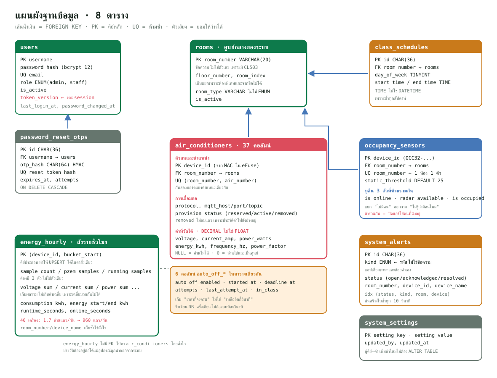

ฐานข้อมูล MariaDB
บทนี้พาไล่ "ความจำถาวร" ของระบบ RMUTT Save Energy ทั้งหมด ตั้งแต่พื้นฐานว่าฐานข้อมูลเชิงสัมพันธ์คืออะไร ทำไมเลือก MariaDB คำสั่ง SQL ที่ต้องรู้ (อธิบายผ่านตารางจริงของโปรเจค) ไปจนถึงตารางทั้ง 11 ตารางแบบทีละคอลัมน์ ทุก index ว่ามีไว้ทำไม การออกแบบตารางค่าไฟรายชั่วโมง energy_hourly ไฟล์ db.js ที่ Backend ใช้คุยกับฐานข้อมูล แนวคิด migration และ schema doctor และวิธีสำรอง กู้คืน และเปิดดูฐานข้อมูลบนเซิร์ฟเวอร์อย่างปลอดภัย อ่านจบแล้วควรวาดความสัมพันธ์ของตารางได้เอง และตอบได้ว่า "ทำไมออกแบบแบบนี้" ทุกจุด
ภาพรวม#
ในระบบนี้ มีโปรแกรมเดียวที่คุยกับฐานข้อมูลโดยตรง คือ Backend (Node.js) ส่วนอื่นทั้งหมดต้องผ่าน Backend
ESP32 (แอร์ + PZEM) ──MQTT──┐
ESP32 (LD2410) ──MQTT──┤
▼
แอป Flutter ──HTTPS API──▶ Backend (Node.js) ──SQL (พอร์ต 3306)──▶ MariaDB
เว็บแอป ──HTTPS API──▶ │ (container "db")
└── services/auto-off.js ปิดแอร์อัตโนมัติ อ่าน/เขียนฐานข้อมูลทุก ~10 วินาที
- ESP32 ส่งสถานะ ค่าไฟ และสถานะคนในห้อง ผ่าน MQTT ไปที่ Mosquitto แล้ว
services/mqtt.jsใน Backend รับมาเขียนลงตารางair_conditioners,occupancy_sensorsและenergy_hourly - แอป/เว็บ เรียก REST API (เช่น
/api/rooms,/api/users) ไฟล์ในroutes/แปลงคำขอเป็นคำสั่ง SQL - MariaDB รันเป็น Docker container ชื่อ
rmutt-db(imagemariadb:11) ข้อมูลจริงอยู่ในโฟลเดอร์./db/dataบนเซิร์ฟเวอร์ และเปิดพอร์ตให้แค่127.0.0.1:3306ของเครื่องเซิร์ฟเวอร์เท่านั้น
ทำไมให้ Backend เป็นทางเดียวเข้าฐานข้อมูล ถ้าให้แอปหรือ ESP32 ต่อฐานข้อมูลตรง ต้องฝังรหัสผ่านฐานข้อมูลไว้ในเครื่องผู้ใช้หรือในบอร์ด ใครแกะแอปได้ก็อ่าน/ลบข้อมูลได้ทั้งหมด การมี Backend คั่นกลางทำให้ตรวจสิทธิ์ (JWT, role) และตรวจความถูกต้องของข้อมูลก่อนเขียนได้ทุกครั้ง
โครงสร้างไฟล์#
| ไฟล์ | หน้าที่ |
|---|---|
backend/database/schema.sql |
นิยามโครงสร้างทุกตาราง (11 ตาราง) พร้อม index, foreign key และข้อมูลเริ่มต้น (ห้อง ตารางเรียนตัวอย่าง ค่าตั้งระบบ) เป็น "แหล่งความจริง" ของโครงสร้าง |
backend/src/db.js |
สร้าง Connection Pool ไปยัง MariaDB แบบสร้างเมื่อใช้ครั้งแรก และมีฟังก์ชัน withTransaction |
backend/src/config.js (ส่วน db) |
อ่านค่าการเชื่อมต่อจาก environment (DB_HOST, DB_PORT, DB_USER, DB_PASSWORD, DB_DATABASE, DB_CONNECTION_LIMIT) |
backend/src/utils/schema-doctor.js |
ฟังก์ชันบริสุทธิ์: แยก schema.sql ออกเป็นตาราง/คอลัมน์ และเทียบกับฐานข้อมูลจริง |
backend/scripts/doctor.js |
สคริปต์ npm run db:doctor ตรวจว่าฐานข้อมูลจริงขาดตาราง/คอลัมน์อะไร ถ้าใส่ --fix จะสร้าง/เติมให้ |
backend/scripts/init-db.js |
สคริปต์ npm run db:init รัน schema.sql ทั้งไฟล์ (ใช้ตอนติดตั้งครั้งแรก) |
backend/scripts/seed-admin.js |
สคริปต์ npm run seed:admin สร้าง/รีเซ็ตบัญชีแอดมินคนแรก |
backend/scripts/migrate-rooms-v180.js |
migration รุ่น 1.8.0: สร้างตาราง rooms และผูก foreign key จากตารางอื่น |
backend/scripts/migrate-user-primary-key.js |
migration: เปลี่ยน primary key ของ users จาก id ตัวเลขเป็น username |
backend/package.json (ส่วน scripts) |
รายชื่อคำสั่ง db:* และ migration อื่น ๆ ทั้งหมด |
deploy/docker-compose.yml (service db) |
กำหนด container MariaDB, user ของแอป, เขตเวลา และการผูกพอร์ต 127.0.0.1:3306 |
deploy/backup-db.sh |
สำรองฐานข้อมูลเป็น .sql.gz ทุกวัน 02:30 (cron) ตรวจไฟล์ครบ ลบของเก่า ส่งสำเนาออกนอกเครื่อง |
deploy/db-view.sh |
ดูข้อมูลบนเซิร์ฟเวอร์แบบอ่านอย่างเดียวผ่าน docker compose exec |
db-tunnel.ps1 |
สคริปต์ PowerShell บน Windows เปิด SSH tunnel จากเครื่องเรา (พอร์ต 3307) ไปฐานข้อมูลบนเซิร์ฟเวอร์ เพื่อใช้ HeidiSQL |
ความรู้พื้นฐาน: ฐานข้อมูลเชิงสัมพันธ์#
ฐานข้อมูลเชิงสัมพันธ์ (Relational Database) คืออะไร
คือการเก็บข้อมูลเป็น ตาราง (table) แต่ละตารางมี คอลัมน์ (column) ที่กำหนดชนิดไว้ตายตัว และมีหลาย แถว (row) หนึ่งแถวคือข้อมูลหนึ่งรายการ เช่น ตาราง rooms หนึ่งแถวคือหนึ่งห้อง
ตารางเชื่อมกันด้วย "ค่าที่ใช้ร่วมกัน" เช่น แอร์แต่ละเครื่องมีคอลัมน์ room_number ชี้ไปยังห้องในตาราง rooms ความสัมพันธ์ (relation) นี้เองเป็นที่มาของชื่อ
เราสั่งงานด้วยภาษา SQL (Structured Query Language) เช่น SELECT อ่าน, INSERT เพิ่ม, UPDATE แก้, DELETE ลบ, CREATE TABLE สร้างตาราง
ข้อดีที่โปรเจคนี้ได้ใช้จริง:
- บังคับโครงสร้าง — คอลัมน์
voltageเป็นDECIMAL(8,2)ใส่ข้อความไม่ได้ ข้อมูลขยะเข้าไม่ได้ตั้งแต่ชั้นฐานข้อมูล - บังคับความสัมพันธ์ — สร้างแอร์ในห้องที่ไม่มีอยู่จริงไม่ได้ (foreign key)
- Transaction — หลายคำสั่งสำเร็จพร้อมกันหรือยกเลิกพร้อมกัน ข้อมูลไม่ค้างครึ่ง ๆ กลาง ๆ
- Query ยืดหยุ่น — รายงานค่าไฟจะรวมตามตึก/ห้อง/เครื่อง ช่วงวันไหนก็ได้ด้วย
GROUP BYคำสั่งเดียว
ทำไมเลือก MariaDB#
ทำไมใช้ MariaDB ไม่ใช่ตัวอื่น
- MariaDB เป็นสายที่แยกมาจาก MySQL ใช้ SQL แบบเดียวกัน เอกสาร ตัวอย่าง และเครื่องมือ (HeidiSQL, DBeaver) ใช้ร่วมกันได้ทั้งหมด
- ฟรีและเปิดซอร์ส มี Docker image ทางการ (mariadb:11) รันบน VPS เล็ก ๆ ได้สบาย
- มีไดรเวอร์ Node.js ทางการ คือแพ็กเกจ mariadb (ใน package.json คือ "mariadb": "^3.4.2") รองรับ Promise/async-await และ Connection Pool ในตัว
- Engine InnoDB รองรับ transaction, foreign key และ row lock (FOR UPDATE) ซึ่งระบบนี้ใช้ทั้งหมด
- ข้อมูลของระบบเป็นโครงสร้างชัดเจน (ผู้ใช้ ห้อง อุปกรณ์ ตารางเรียน) และมีความสัมพันธ์กัน จึงเหมาะกับฐานข้อมูลเชิงสัมพันธ์มากกว่าแบบ document (เช่น MongoDB)
SQL ที่ต้องรู้ (อธิบายผ่าน schema ของโปรเจค)#
CREATE TABLE IF NOT EXISTS#
ทุกตารางใน schema.sql ขึ้นต้นด้วย CREATE TABLE IF NOT EXISTS แปลว่า "ถ้ายังไม่มีตารางนี้ ให้สร้าง ถ้ามีแล้วข้ามไป" ทำให้รันไฟล์ซ้ำได้โดยไม่ error และไม่ลบข้อมูลเดิม (แต่ก็ ไม่เติมคอลัมน์ใหม่ ให้ตารางที่มีอยู่แล้ว จึงต้องมี migration และ doctor ซึ่งจะอธิบายภายหลัง)
ชนิดข้อมูลที่ใช้ในโปรเจค#
| ชนิด | ความหมาย | ตัวอย่างในโปรเจค |
|---|---|---|
VARCHAR(n) |
ข้อความยาวไม่เกิน n ตัวอักษร เก็บเท่าที่ใช้จริง | username VARCHAR(100), room_number VARCHAR(20) |
CHAR(n) |
ข้อความยาวตายตัว n ตัว | id CHAR(36) (UUID), otp_hash CHAR(64) (HMAC-SHA256 แบบ hex) |
TINYINT UNSIGNED |
จำนวนเต็ม 0–255 ใช้ 1 ไบต์ | floor_number, air_number, attempts |
SMALLINT UNSIGNED |
จำนวนเต็ม 0–65535 ใช้ 2 ไบต์ | mqtt_port, room_index, history_pending |
INT UNSIGNED |
จำนวนเต็ม 0–ประมาณ 4.29 พันล้าน | sample_count, runtime_seconds |
DECIMAL(p,s) |
ทศนิยมแบบแม่นยำ p หลักรวม มี s หลักหลังจุด | voltage DECIMAL(8,2), energy_kwh DECIMAL(12,3) |
BOOLEAN |
ใน MariaDB คือ TINYINT(1) เก็บ 0/1 |
is_active, is_online |
ENUM(...) |
เลือกได้เฉพาะค่าในรายการ | role ENUM('admin','staff') |
DATE / TIME |
วันที่อย่างเดียว / เวลาของวันอย่างเดียว | start_date DATE, start_time TIME |
DATETIME / TIMESTAMP |
วันที่+เวลา (ต่างกันอย่างไร ดูหัวข้อถัดไป) | created_at DATETIME, system_settings.updated_at TIMESTAMP |
LONGTEXT |
ข้อความยาวมาก | state_json (JSON สถานะรีโมตแอร์) |
ทำไมค่าไฟใช้ DECIMAL ไม่ใช้ FLOAT
FLOAT/DOUBLE เก็บเลขฐานสองแบบประมาณ 0.1 + 0.2 อาจได้ 0.30000000000000004 เมื่อบวกสะสมหลายหมื่นครั้ง (เช่น consumption_kwh = consumption_kwh + ...) ความคลาดเคลื่อนจะสะสม DECIMAL เก็บเลขฐานสิบแบบตรงตัว จึงเหมาะกับเงินและหน่วยไฟที่ต้องบวกสะสม
DECIMAL กับ BOOLEAN กลับมาที่ JavaScript ในรูปไหน
ไดรเวอร์ mariadb คืน BOOLEAN เป็นตัวเลข 0/1 และคืน DECIMAL เป็นข้อความ (string) เพื่อไม่ให้เสียความแม่นยำ โค้ดในโปรเจคจึงห่อด้วย Boolean(row.is_online) หรือ Number(...) / numberOrNull(...) เสมอ ถ้าอาจารย์ถามว่าทำไมมี Number() เต็มไปหมด นี่คือเหตุผล
PRIMARY KEY (คีย์หลัก)#
คีย์หลักคือคอลัมน์ (หรือชุดคอลัมน์) ที่ ไม่ซ้ำและไม่เป็น NULL ใช้ระบุแถวหนึ่งแถวแบบไม่กำกวม ใน InnoDB ข้อมูลจริงของตารางถูกเรียงตามคีย์หลัก (clustered index) การค้นด้วยคีย์หลักจึงเร็วที่สุด
โปรเจคนี้ใช้คีย์หลักสามแบบ:
| แบบ | ตาราง | ตัวอย่าง | เหตุผล |
|---|---|---|---|
| คีย์ธรรมชาติ (natural key) | users, rooms, air_conditioners, occupancy_sensors, academic_terms, system_settings |
username, room_number, device_id (ESP32- + 12 หลักฐานสิบหก), semester |
ค่าพวกนี้ไม่ซ้ำโดยธรรมชาติอยู่แล้ว และคนอ่านเข้าใจทันที ไม่ต้อง JOIN เพื่อแปลงเลข id เป็นชื่อ |
| UUID | password_reset_otps, class_schedules, system_alerts, room_bookings |
id CHAR(36) สร้างจาก crypto.randomUUID() |
ไม่มีค่าธรรมชาติที่ไม่ซ้ำ และ UUID เดาไม่ได้ (ต่างจาก 1, 2, 3) |
| คีย์ผสม (composite key) | energy_hourly |
PRIMARY KEY (device_id, bucket_start) |
หนึ่งแถว = หนึ่งเครื่องต่อหนึ่งชั่วโมง คู่นี้จึงเป็นตัวระบุตามธรรมชาติ และใช้เป็นเป้าของ ON DUPLICATE KEY UPDATE |
UNIQUE (ห้ามซ้ำ)#
UNIQUE KEY บังคับว่าค่าในคอลัมน์ (หรือชุดคอลัมน์) ห้ามซ้ำ แต่ต่างจากคีย์หลักตรงที่มีได้หลายตัวต่อตาราง และคอลัมน์ที่เป็น NULL ซ้ำกันได้ ตัวอย่าง:
uq_users_email (email)— อีเมลหนึ่งใช้ได้กับบัญชีเดียว เพราะการรีเซ็ตรหัสผ่านส่ง OTP ไปที่อีเมลuq_air_room_number (room_number, air_number)— ในห้องเดียวกัน "แอร์เครื่องที่ 1" มีได้เครื่องเดียวuq_password_reset_token_hash (reset_token_hash)— คอลัมน์นี้เป็นNULLได้ แถวที่ยังไม่ยืนยัน OTP จึงมีNULLซ้ำกันได้หลายแถว แต่ token ที่ออกแล้วห้ามชนกัน
เมื่อเขียนค่าซ้ำ MariaDB จะคืน error รหัส ER_DUP_ENTRY ซึ่งโค้ดดักไว้เพื่อตอบผู้ใช้เป็นภาษาคน เช่นใน routes/auth.js และ routes/users.js
INDEX (KEY)#
Index คืออะไร
Index เหมือนสารบัญท้ายหนังสือ ถ้าไม่มี การหา "แอร์ทุกเครื่องในห้อง 16302" ต้องอ่านทุกแถวทั้งตาราง (full table scan) ถ้ามี index ที่ขึ้นต้นด้วย room_number ฐานข้อมูลกระโดดไปหาได้ทันที (โครงสร้าง B-Tree)
กฎ leftmost prefix: index หลายคอลัมน์ (a, b, c) ช่วยค้นได้เมื่อเงื่อนไขใช้ a หรือ a,b หรือ a,b,c แต่ ช่วยไม่ได้ ถ้าค้นด้วย b อย่างเดียว ลำดับคอลัมน์ใน index จึงสำคัญมาก
ราคาที่ต้องจ่าย: ทุกครั้งที่ INSERT/UPDATE ต้องอัปเดต index ด้วย และกินพื้นที่ดิสก์ จึงสร้างเฉพาะที่มีคำค้นใช้จริง
ใน schema เขียนว่า KEY ชื่อ (คอลัมน์...) ซึ่งความหมายเดียวกับ INDEX ตั้งชื่อนำหน้าด้วย idx_ (index ธรรมดา), uq_ (unique) และ fk_ (foreign key) ให้อ่านแล้วรู้ชนิดทันที
FOREIGN KEY (คีย์นอก)#
Foreign key บังคับว่าค่าในคอลัมน์ลูก ต้องมีอยู่จริง ในคอลัมน์ของตารางแม่ ตัวอย่างจาก air_conditioners:
CONSTRAINT fk_air_conditioner_room
FOREIGN KEY (room_number) REFERENCES rooms (room_number)
ON UPDATE CASCADE
ON DELETE RESTRICT
FOREIGN KEY (room_number) REFERENCES rooms (room_number)—room_numberของแอร์ต้องเป็นห้องที่มีในตารางroomsON UPDATE CASCADE— ถ้าเปลี่ยนเลขห้องในตารางroomsแถวลูกจะเปลี่ยนตามอัตโนมัติON DELETE RESTRICT— ห้ามลบห้องที่ยังมีแอร์ผูกอยู่ (ป้องกันแอร์ "กำพร้า" ที่ไม่รู้ว่าอยู่ห้องไหน)ON DELETE CASCADE(ใช้ในpassword_reset_otpsและroom_bookings) — ลบแม่แล้วลูกหายตามไปด้วย
| ความสัมพันธ์ | ON DELETE | เหตุผล |
|---|---|---|
password_reset_otps.username → users |
CASCADE | OTP ของผู้ใช้ที่ถูกลบไม่มีประโยชน์อีก |
class_schedules.room_number → rooms |
RESTRICT | ตารางเรียนเป็นข้อมูลสำคัญ ต้องลบเองอย่างตั้งใจ ไม่ใช่หายไปเพราะลบห้อง |
air_conditioners.room_number → rooms |
RESTRICT | ต้องถอดอุปกรณ์ก่อน (มีบัญชี MQTT และ provisioning ผูกอยู่) |
occupancy_sensors.room_number → rooms |
RESTRICT | เหตุผลเดียวกับแอร์ |
room_bookings.room_number → rooms |
CASCADE | การจองใช้ห้องผูกกับห้องเท่านั้น คอมเมนต์ใน schema เขียนชัดว่า "ลบห้องแล้วการจองของห้องนั้นหายไปด้วย" |
Foreign key ต้องมี index
InnoDB ต้องการ index ที่ขึ้นต้นด้วยคอลัมน์ของ foreign key เสมอ (ถ้าไม่มีจะสร้างให้เอง) ทุกตารางลูกในโปรเจคนี้จึงมี index ขึ้นต้นด้วย room_number หรือ username อยู่แล้ว เช่น idx_air_room_status (room_number, provision_status)
ENUM#
ENUM('admin', 'staff') คือคอลัมน์ที่รับได้เฉพาะค่าในรายการ MariaDB เก็บภายในเป็นเลขลำดับ (1–2 ไบต์) จึงประหยัดกว่าข้อความ และใน strict mode (ค่าปกติของ MariaDB รุ่นใหม่) ถ้าใส่ค่านอกรายการจะ error ทันที
ใช้ใน: users.role, air_conditioners.provision_status, occupancy_sensors.provision_status, system_alerts.kind, system_alerts.status
ข้อเสียของ ENUM
เพิ่มค่าใหม่ต้อง ALTER TABLE ... MODIFY ทั้งคอลัมน์ ดังนั้นคอลัมน์ที่คาดว่าจะเพิ่มค่าบ่อย เช่น room_bookings.category และ repeat_type โปรเจคเลือกใช้ VARCHAR แล้วตรวจค่าในโค้ดแทน (BOOKING_CATEGORIES และ REPEAT_TYPES ใน utils/room-booking.js)
DATETIME กับ TIMESTAMP#
DATETIME |
TIMESTAMP |
|
|---|---|---|
| เก็บอะไร | วันที่-เวลา "ตามที่เขียน" ไม่สนเขตเวลา | วินาทีนับจาก 1970 แบบ UTC แล้วแปลงตามเขตเวลาของ session ตอนอ่าน/เขียน |
| ช่วงค่า | ปี 1000–9999 | ช่วงจำกัด (รุ่นดั้งเดิมถึงปี 2038) |
| ใช้ในโปรเจค | เกือบทุกคอลัมน์เวลา | เฉพาะ system_settings.updated_at |
ทำไมโปรเจคเลือก DATETIME เกือบทั้งหมด
ระบบนี้ใช้เวลาไทยล้วน: container ฐานข้อมูลตั้ง TZ: Asia/Bangkok และ Backend ตั้ง ENV TZ=Asia/Bangkok ใน deploy/backend.Dockerfile ค่า bucket_start = '2026-08-21 15:00:00' ใน energy_hourly ต้องแปลว่า "15:00 เวลาไทย" ตลอดไป ไม่ว่าใครจะต่อเข้ามาด้วยเขตเวลาอะไร DATETIME ไม่แปลงค่าเอง จึงไม่มีโอกาสที่ชั่วโมงจะเลื่อน และไม่ติดปัญหาปี 2038
DEFAULT CURRENT_TIMESTAMP และ ON UPDATE CURRENT_TIMESTAMP#
created_at DATETIME NOT NULL DEFAULT CURRENT_TIMESTAMP,
updated_at DATETIME NOT NULL DEFAULT CURRENT_TIMESTAMP
ON UPDATE CURRENT_TIMESTAMP,
DEFAULT CURRENT_TIMESTAMP— ตอน INSERT ถ้าไม่ระบุค่า ให้ใช้เวลาปัจจุบันON UPDATE CURRENT_TIMESTAMP— ทุกครั้งที่แถวถูก UPDATE (และมีค่าเปลี่ยนจริง) ให้ปรับเป็นเวลาปัจจุบันเอง
โค้ดฝั่ง Node จึงไม่ต้องจำใส่ created_at/updated_at เอง และเวลาเหล่านี้มาจากนาฬิกาเดียวกัน (ของฐานข้อมูล) เสมอ
ENGINE, CHARSET และ COLLATE#
ทุกตารางปิดท้ายด้วย
) ENGINE=InnoDB
DEFAULT CHARSET=utf8mb4
COLLATE=utf8mb4_unicode_ci;
ENGINE=InnoDB— engine ที่รองรับ transaction, foreign key และ row-level lockutf8mb4— UTF-8 เต็มรูปแบบ (สูงสุด 4 ไบต์ต่อตัวอักษร) เก็บภาษาไทยได้ครบ (utf8แบบเก่าของ MySQL เก็บได้แค่ 3 ไบต์)utf8mb4_unicode_ci— กฎการเปรียบเทียบ/เรียงลำดับตามมาตรฐาน Unicode ส่วนci= case-insensitive แปลว่า'Admin'กับ'admin'ถือว่าเท่ากัน (มีผลกับ UNIQUE ของemailและusernameด้วย)
INSERT IGNORE และ ON DUPLICATE KEY UPDATE#
สองคำสั่งนี้เป็นหัวใจของการ "รันซ้ำได้" (idempotent) ในโปรเจค
| คำสั่ง | เมื่อคีย์ซ้ำ | ใช้ที่ไหน |
|---|---|---|
INSERT IGNORE INTO ... |
ข้ามแถวนั้นเงียบ ๆ ไม่ error | ข้อมูลเริ่มต้นท้าย schema.sql, migrate-rooms-v180.js |
INSERT ... ON DUPLICATE KEY UPDATE ... |
เปลี่ยนเป็น UPDATE แถวเดิม (เรียกว่า upsert) | seed-admin.js, services/energy-recorder.js, services/system-settings.js, services/academic-terms.js, routes/schedules.js |
ใน ON DUPLICATE KEY UPDATE:
- ชื่อคอลัมน์เปล่า ๆ เช่น sample_count = ค่าเดิมในแถว
- VALUES(sample_count) = ค่าใหม่ที่พยายามจะ INSERT
- ดังนั้น sample_count = sample_count + VALUES(sample_count) แปลว่า "บวกเพิ่มเข้าไปในของเดิม"
ทำไม upsert ดีกว่า "SELECT ก่อนแล้วค่อยเลือก INSERT หรือ UPDATE" ถ้าทำสองขั้น ระหว่าง SELECT กับ INSERT อาจมีอีกงานแทรกเข้ามา INSERT แถวเดียวกันก่อน (race condition) แล้วงานเราจะชน UNIQUE upsert ทำเสร็จในคำสั่งเดียวแบบ atomic ฐานข้อมูลรับประกันเอง
Transaction#
Transaction และ ACID
Transaction คือกลุ่มคำสั่งที่ต้อง "สำเร็จทั้งหมด หรือไม่เกิดอะไรเลย" (Atomicity) ขั้นตอนคือ BEGIN → คำสั่งหลายคำสั่ง → COMMIT (ยืนยัน) หรือ ROLLBACK (ย้อนทั้งหมด) คุณสมบัติ ACID = Atomicity, Consistency, Isolation, Durability
ตัวอย่างจริง: ตอนขอรีเซ็ตรหัสผ่าน (routes/auth.js) ระบบต้อง (1) ทำให้ OTP เก่าทั้งหมดของผู้ใช้ใช้ไม่ได้ และ (2) เพิ่ม OTP ใหม่ ถ้าข้อ 2 ล้มแต่ข้อ 1 สำเร็จ ผู้ใช้จะไม่มี OTP ใช้เลย จึงห่อทั้งสองคำสั่งไว้ใน withTransaction(...) (อธิบายตัวฟังก์ชันในหัวข้อ db.js)
SELECT ... FOR UPDATE (ล็อกแถว)#
FOR UPDATE ใช้ภายใน transaction เพื่อ ล็อกแถวที่อ่าน งานอื่นที่จะแก้หรือ FOR UPDATE แถวเดียวกันต้องรอจนเรา COMMIT/ROLLBACK
| ที่ใช้ | ป้องกันอะไร |
|---|---|
routes/auth.js (ยืนยันรีเซ็ตรหัสผ่าน) ล็อกแถวใน password_reset_otps |
กดส่งซ้ำสองครั้งพร้อมกัน token เดียวถูกใช้สองรอบ |
routes/users.js ล็อกแถวใน users |
แอดมินสองคนลดสิทธิ์กันพร้อมกันจนไม่เหลือแอดมินที่ใช้งานได้ |
routes/rooms.js (ลบห้อง) ล็อกแถวใน rooms |
มีคนเพิ่มอุปกรณ์เข้าห้องระหว่างที่กำลังตรวจว่าห้องว่างแล้วลบ |
services/energy-recorder.js (recordHistoryBatch) ล็อกแถวใน air_conditioners |
ข้อมูลย้อนหลังสองชุดของบอร์ดเดียวกันใช้ "จุดต่อ" เดียวกันพร้อมกัน แล้วนับพลังงานซ้ำ |
Named lock (GET_LOCK)
นอกจากล็อกแถว services/auto-off.js ยังใช้ SELECT GET_LOCK(?, 0) ชื่อ 'rmutt_auto_off_runner' เป็นล็อกระดับทั้งฐานข้อมูล เพื่อให้รอบปิดแอร์อัตโนมัติทำงานได้ทีละรอบเท่านั้น (เลข 0 คือไม่รอ ถ้ามีคนถือล็อกอยู่ก็ข้ามรอบนี้ไป) และปลดด้วย RELEASE_LOCK
แผนภาพความสัมพันธ์ (ER Diagram)#
เส้นทึบ (───) คือ foreign key ที่ฐานข้อมูลบังคับจริง เส้นประ (···) คือความสัมพันธ์ทางตรรกะที่ ไม่มี foreign key
┌──────────────────┐ 1 N ┌──────────────────────┐
│ users │────────────│ password_reset_otps │ ON DELETE CASCADE
│ PK username │ │ FK username │
└──────────────────┘ └──────────────────────┘
┊ (created_by / updated_by / acknowledged_by ในหลายตาราง: ไม่มี FK)
┌──────────────────────┐
│ rooms │
│ PK room_number │
└──────────────────────┘
1 │ RESTRICT 1 │ RESTRICT 1 │ RESTRICT 1 │ CASCADE
N │ N │ 1 │ N │
┌───────────────┐ ┌──────────────────┐ ┌───────────────────┐ ┌───────────────┐
│class_schedules│ │ air_conditioners │ │ occupancy_sensors │ │ room_bookings │
│PK id (UUID) │ │ PK device_id │ │ PK device_id │ │ PK id (UUID) │
│FK room_number │ │ FK room_number │ │ FK room_number │ │ FK room_number│
└───────────────┘ └──────────────────┘ │ UNIQUE room_number│ └───────────────┘
1 ┊ └───────────────────┘
N ┊ (device_id, ไม่มี FK)
┌────────────────────────────┐ ┌──────────────────────────┐
│ energy_hourly │ │ system_alerts │
│ PK (device_id,bucket_start)│ │ PK id (UUID) │
│ room_number (สำเนา, ไม่มี FK) │ │ room_number, device_id │
└────────────────────────────┘ │ (อ้างถึง แต่ไม่มี FK) │
└──────────────────────────┘
┌───────────────────────────┐ ค่า timetable_semester ┊ ┌──────────────────┐
│ system_settings │┈┈┈┈┈┈┈┈┈┈┈┈┈┈┈┈┈┈┈┈┈┈┈┈┈┈┈▶│ academic_terms │
│ PK setting_key │ ชี้ไปที่ semester (ตรรกะ) │ PK semester │
└───────────────────────────┘ └──────────────────┘
ทำไม energy_hourly และ system_alerts จงใจไม่มี foreign key
ทั้งสองตารางเป็น ประวัติ ถ้าผูก FK แบบ RESTRICT จะลบแอร์/ห้องไม่ได้ตราบที่มีประวัติ ถ้าผูกแบบ CASCADE ลบแอร์ทีเดียวประวัติค่าไฟทั้งปีหายหมด การไม่ผูก FK ทำให้ประวัติอยู่ต่อได้แม้อุปกรณ์ถูกถอดไปแล้ว และ energy_hourly ยังเก็บ room_number กับ device_name เป็นสำเนาในแถวเอง รายงานย้อนหลังจึงยังแสดงชื่อเดิมได้โดยไม่ต้อง JOIN
ทำไม created_by / updated_by ไม่ผูก FK ไปที่ users
ค่าในคอลัมน์นี้บางแถวเป็น 'system' (ข้อมูลเริ่มต้นใน schema.sql) ซึ่งไม่ใช่ผู้ใช้จริง และถ้าผูก FK จะลบบัญชีผู้ใช้ที่เคยสร้างห้อง/ตารางเรียนไม่ได้ จึงเก็บเป็น "ลายเซ็น" ข้อความธรรมดาไว้ตรวจย้อนหลัง

รูปแผนภาพนี้เก่ากว่า schema จริง
รูป 02-database.svg วาดไว้ 8 ตาราง (หัวรูปเขียน "8 ตาราง") และระบุว่า air_conditioners มี 37 คอลัมน์ แต่ schema.sql ปัจจุบันมี 11 ตาราง รูปยังไม่มี academic_terms กับ room_bookings และ air_conditioners มี 43 คอลัมน์ (เพิ่ม firmware_version, ota_error, energy_chain_*, history_pending) ให้เชื่อ ER diagram แบบตัวอักษรด้านบนและตารางในบทนี้ จำนวนคอลัมน์ที่ได้จาก parseSchemaTables() คือ users 13, password_reset_otps 9, rooms 8, class_schedules 12, air_conditioners 43, occupancy_sensors 21, system_alerts 11, energy_hourly 27, system_settings 4, academic_terms 6, room_bookings 15
ตารางทีละตาราง#
ในหัวข้อนี้ เลขบรรทัดอ้างอิงตามแต่ละ code block (เริ่มนับ 1 ใหม่ทุกบล็อก)
หัวข้อนี้บอกว่าแต่ละคอลัมน์ "คืออะไร" ถ้าอยากรู้ว่า ทำไมออกแบบแบบนี้ คอลัมน์ไหนจำเป็นจริง คอลัมน์ไหนเหลือจากรุ่นเก่า และทำแบบอื่นได้ไหม อ่านต่อที่บท 20 เจาะลึกการออกแบบฐานข้อมูล
ตาราง users — บัญชีผู้ใช้#
ไฟล์: backend/database/schema.sql
CREATE TABLE IF NOT EXISTS users (
username VARCHAR(100) NOT NULL,
password_hash VARCHAR(255) NOT NULL,
first_name VARCHAR(100) NOT NULL DEFAULT '',
last_name VARCHAR(100) NOT NULL DEFAULT '',
email VARCHAR(190) NOT NULL,
phone VARCHAR(30) NULL,
role ENUM('admin', 'staff') NOT NULL DEFAULT 'staff',
is_active BOOLEAN NOT NULL DEFAULT TRUE,
token_version INT UNSIGNED NOT NULL DEFAULT 0,
last_login_at DATETIME NULL,
password_changed_at DATETIME NULL,
created_at DATETIME NOT NULL DEFAULT CURRENT_TIMESTAMP,
updated_at DATETIME NOT NULL DEFAULT CURRENT_TIMESTAMP
ON UPDATE CURRENT_TIMESTAMP,
PRIMARY KEY (username),
UNIQUE KEY uq_users_email (email),
KEY idx_users_role_active (role, is_active)
) ENGINE=InnoDB
DEFAULT CHARSET=utf8mb4
COLLATE=utf8mb4_unicode_ci;
- บรรทัด 1 — สร้างตาราง
usersถ้ายังไม่มี - บรรทัด 2 —
usernameชื่อเข้าระบบ เป็นคีย์หลัก (บรรทัด 16)NOT NULLเพราะคีย์หลักห้ามว่าง - บรรทัด 3 —
password_hashเก็บ ค่าแฮช bcrypt ไม่ใช่รหัสผ่านจริง (bcrypt ยาว 60 ตัว เผื่อไว้ 255 เผื่อเปลี่ยนอัลกอริทึมในอนาคต) - บรรทัด 4–5 — ชื่อ/นามสกุล
DEFAULT ''เพื่อไม่ต้องจัดการNULLในโค้ด - บรรทัด 6 —
emailใช้รับ OTP ตอนลืมรหัสผ่าน และห้ามซ้ำ (บรรทัด 17) - บรรทัด 7 —
phoneเป็นNULLได้ (ไม่บังคับในระดับฐานข้อมูล) - บรรทัด 8 —
roleมีแค่admin(จัดการผู้ใช้/ห้อง/อุปกรณ์ได้) และstaffค่าเริ่มต้นเป็นstaffตามหลักให้สิทธิ์น้อยที่สุดไว้ก่อน - บรรทัด 9 —
is_activeปิดบัญชีแทนการลบ (soft disable) ประวัติที่อ้างถึง username ยังอยู่ - บรรทัด 10 —
token_versionตัวนับเวอร์ชันของ JWT ดูกล่อง WHY ด้านล่าง - บรรทัด 11–12 — เวลาเข้าระบบล่าสุด และเวลาเปลี่ยนรหัสผ่านล่าสุด
NULL= ยังไม่เคย - บรรทัด 13–15 — เวลาสร้าง/แก้ไขอัตโนมัติ
- บรรทัด 16 — คีย์หลักคือ
username - บรรทัด 17 — อีเมลห้ามซ้ำ
- บรรทัด 18 — index สำหรับค้น "แอดมินที่ยังใช้งานอยู่" (ใช้ตอนตรวจว่าจะไม่เหลือแอดมินเลยหรือไม่)
- บรรทัด 19–21 — InnoDB + utf8mb4
| คอลัมน์ | ชนิด | ความหมาย | ทำไม |
|---|---|---|---|
username |
VARCHAR(100) PK | ชื่อเข้าระบบ | ไม่ซ้ำโดยธรรมชาติ ใช้เป็นคีย์ได้เลย อ่านง่ายเวลาเห็นใน created_by |
password_hash |
VARCHAR(255) | แฮช bcrypt (cost 12) | ถ้าฐานข้อมูลหลุด คนร้ายไม่ได้รหัสผ่านจริง |
first_name, last_name |
VARCHAR(100) | ชื่อ-นามสกุล | ใช้แสดงผลและใส่ในอีเมล OTP |
email |
VARCHAR(190) UNIQUE | อีเมล | ช่องทางส่ง OTP ต้องไม่ซ้ำ ไม่งั้นไม่รู้ว่าจะรีเซ็ตบัญชีไหน |
phone |
VARCHAR(30) NULL | เบอร์โทร | เก็บเป็นข้อความเพราะมีเลข 0 นำหน้าและเครื่องหมาย + |
role |
ENUM | admin/staff |
จำกัดค่าที่ระดับฐานข้อมูล |
is_active |
BOOLEAN | บัญชีใช้งานได้หรือไม่ | ปิดบัญชีได้โดยไม่ทำลายประวัติ |
token_version |
INT UNSIGNED | เวอร์ชันของ token | ทำให้ JWT เก่าหมดอายุทันทีเมื่อเปลี่ยนรหัส/สิทธิ์ |
last_login_at |
DATETIME NULL | เข้าระบบล่าสุด | ให้แอดมินเห็นบัญชีที่ไม่ได้ใช้ |
password_changed_at |
DATETIME NULL | เปลี่ยนรหัสล่าสุด | ใช้ตรวจสอบย้อนหลัง |
created_at, updated_at |
DATETIME | เวลาสร้าง/แก้ | ฐานข้อมูลเติมให้เอง |
ทำไมอีเมลยาว VARCHAR(190) ไม่ใช่ 255
utf8mb4 ใช้สูงสุด 4 ไบต์ต่อตัวอักษร 190 × 4 = 760 ไบต์ ซึ่งไม่เกินขีด 767 ไบต์ต่อคอลัมน์ใน index ของ InnoDB รูปแบบแถวรุ่นเก่า ส่วน 255 × 4 = 1020 ไบต์ อาจสร้าง UNIQUE index ไม่ได้บนบางเซิร์ฟเวอร์ ตัวเลข 190 จึงเป็นค่าปลอดภัยที่นิยมใช้
token_version ทำงานอย่างไร
JWT ที่ออกให้ตอนล็อกอินบรรจุ ver: Number(user.token_version) ไว้ (routes/auth.js) ทุกคำขอ middleware/authenticate.js อ่าน token_version ปัจจุบันจากฐานข้อมูลมาเทียบ ถ้าไม่ตรงก็ปฏิเสธ เมื่อเปลี่ยนรหัสผ่าน รีเซ็ตรหัส หรือแอดมินเปลี่ยนสิทธิ์ ระบบทำ token_version = token_version + 1 ทำให้ token ทุกใบที่ออกไปก่อนหน้า "ตาย" ทันที โดยไม่ต้องเก็บรายการ token ที่ถูกเพิกถอน
ใครอ่าน/เขียน: routes/auth.js (ล็อกอิน เปลี่ยน/รีเซ็ตรหัส), routes/users.js (แอดมินจัดการผู้ใช้), middleware/authenticate.js (ตรวจ token ทุกคำขอ), routes/public.js, scripts/seed-admin.js
ตาราง password_reset_otps — OTP สำหรับรีเซ็ตรหัสผ่าน#
ไฟล์: backend/database/schema.sql
CREATE TABLE IF NOT EXISTS password_reset_otps (
id CHAR(36) NOT NULL,
username VARCHAR(100) NOT NULL,
otp_hash CHAR(64) NOT NULL,
reset_token_hash CHAR(64) NULL,
expires_at DATETIME NOT NULL,
attempts TINYINT UNSIGNED NOT NULL DEFAULT 0,
verified_at DATETIME NULL,
used_at DATETIME NULL,
created_at DATETIME NOT NULL DEFAULT CURRENT_TIMESTAMP,
PRIMARY KEY (id),
UNIQUE KEY uq_password_reset_token_hash (reset_token_hash),
KEY idx_password_reset_username (username, created_at),
KEY idx_password_reset_expiry (expires_at),
CONSTRAINT fk_password_reset_username
FOREIGN KEY (username) REFERENCES users (username)
ON DELETE CASCADE
) ENGINE=InnoDB
DEFAULT CHARSET=utf8mb4
COLLATE=utf8mb4_unicode_ci;
- บรรทัด 2 —
idเป็น UUID 36 ตัว (สร้างด้วยcrypto.randomUUID()ในroutes/auth.js) - บรรทัด 3 —
usernameเจ้าของคำขอ ผูก FK ไปusers(บรรทัด 14–16) - บรรทัด 4 —
otp_hashแฮชของรหัส OTP ที่ส่งทางอีเมล 64 ตัว เพราะเป็น HMAC-SHA256 แบบเลขฐานสิบหก (hashSecret()ในutils/security.jsใช้OTP_PEPPERเป็นกุญแจ) - บรรทัด 5 —
reset_token_hashแฮชของ token ที่ออกให้หลังยืนยัน OTP ถูกNULLไว้ก่อนจนกว่าจะยืนยัน - บรรทัด 6 —
expires_atเวลาหมดอายุ (ตามOTP_EXPIRES_MINUTESค่าเริ่มต้น 10 นาที) - บรรทัด 7 —
attemptsจำนวนครั้งที่กรอกผิด โค้ดตัดสิทธิ์เมื่อถึง 5 ครั้ง - บรรทัด 8–9 —
verified_atเวลายืนยัน OTP ผ่าน,used_atเวลาใช้ตั้งรหัสใหม่แล้ว (ใช้ซ้ำไม่ได้) - บรรทัด 11 — token ห้ามซ้ำ และใช้ค้นแถวจาก token ได้เร็ว
- บรรทัด 12 — ค้น OTP ล่าสุดของผู้ใช้ (เรียงตามเวลา)
- บรรทัด 13 — index ตามเวลาหมดอายุ
- บรรทัด 14–16 — ลบผู้ใช้แล้ว OTP หายตาม (CASCADE)
| คอลัมน์ | ชนิด | ความหมาย | ทำไม |
|---|---|---|---|
id |
CHAR(36) PK | รหัสคำขอ | UUID เดาไม่ได้ |
username |
VARCHAR(100) FK | ผู้ขอรีเซ็ต | ผูกกับบัญชี |
otp_hash |
CHAR(64) | HMAC ของ OTP | ฐานข้อมูลหลุดก็ไม่รู้ OTP |
reset_token_hash |
CHAR(64) NULL UNIQUE | HMAC ของ token ขั้นที่สอง | แยกขั้น "ยืนยัน OTP" กับ "ตั้งรหัสใหม่" |
expires_at |
DATETIME | หมดอายุ | OTP อายุสั้นลดโอกาสเดา |
attempts |
TINYINT UNSIGNED | ครั้งที่กรอกผิด | กันการเดา 6 หลักแบบไล่ตัวเลข |
verified_at |
DATETIME NULL | ยืนยัน OTP แล้วเมื่อไร | ต้องผ่านขั้นนี้ก่อนตั้งรหัสใหม่ |
used_at |
DATETIME NULL | ใช้แล้วเมื่อไร | ใช้ได้ครั้งเดียว |
created_at |
DATETIME | สร้างเมื่อไร | เรียงหาอันล่าสุด |
ใครอ่าน/เขียน: routes/auth.js เท่านั้น ตอนขอ OTP ระบบห่อ "ทำให้ OTP เก่าใช้ไม่ได้ (SET used_at = NOW())" กับ "INSERT OTP ใหม่" ไว้ใน transaction เดียว และถ้าส่งอีเมลไม่สำเร็จจะ DELETE แถวนั้นทิ้ง
ตาราง rooms — ห้อง#
ไฟล์: backend/database/schema.sql
CREATE TABLE IF NOT EXISTS rooms (
room_number VARCHAR(20) NOT NULL,
floor_number TINYINT UNSIGNED NOT NULL DEFAULT 0,
room_index SMALLINT UNSIGNED NOT NULL DEFAULT 0,
room_type VARCHAR(100) NOT NULL DEFAULT 'Classroom',
created_by VARCHAR(100) NOT NULL,
updated_by VARCHAR(100) NOT NULL,
created_at DATETIME NOT NULL DEFAULT CURRENT_TIMESTAMP,
updated_at DATETIME NOT NULL DEFAULT CURRENT_TIMESTAMP
ON UPDATE CURRENT_TIMESTAMP,
PRIMARY KEY (room_number),
KEY idx_rooms_floor_order
(floor_number, room_index, room_number)
) ENGINE=InnoDB
DEFAULT CHARSET=utf8mb4
COLLATE=utf8mb4_unicode_ci;
- บรรทัด 2 —
room_numberเลขห้อง เช่น'16302'หรือ'CL503'เก็บเป็นข้อความเพราะมีตัวอักษรปน (รูปแบบที่โค้ดยอมรับคือ/^[A-Z0-9][A-Z0-9_-]{1,19}$/ยาวไม่เกิน 20 ตรงกับVARCHAR(20)) - บรรทัด 3 —
floor_numberชั้น ใช้จัดกลุ่มในหน้าแอป - บรรทัด 4 —
room_indexลำดับห้องในชั้น ใช้เรียงให้ตรงกับผังจริง - บรรทัด 5 —
room_typeประเภทห้อง (Classroom, Laboratory, ...) - บรรทัด 6–7 — ใครสร้าง/แก้ล่าสุด
- บรรทัด 11 — คีย์หลักคือเลขห้อง ทุกตารางที่เกี่ยวกับห้องอ้างถึงคอลัมน์นี้
- บรรทัด 12–13 — index สำหรับ "แสดงห้องตามชั้น เรียงตามลำดับ"
| คอลัมน์ | ชนิด | ความหมาย | ทำไม |
|---|---|---|---|
room_number |
VARCHAR(20) PK | เลขห้อง | คนใช้เลขห้องเรียกห้องอยู่แล้ว เป็นคีย์ธรรมชาติ |
floor_number |
TINYINT UNSIGNED | ชั้น (0 = ไม่ระบุ/ห้องพิเศษ เช่น CL503) | ตึกไม่มีเกิน 255 ชั้น 1 ไบต์พอ |
room_index |
SMALLINT UNSIGNED | ลำดับในชั้น | เรียงตามผัง ไม่ใช่ตามตัวอักษร |
room_type |
VARCHAR(100) | ประเภทห้อง | เป็นข้อความอิสระ เพิ่มประเภทใหม่ได้โดยไม่แก้ schema |
created_by, updated_by |
VARCHAR(100) | ผู้สร้าง/แก้ | ตรวจย้อนหลัง |
created_at, updated_at |
DATETIME | เวลา | อัตโนมัติ |
index ที่มีคีย์หลักต่อท้าย
ใน InnoDB ทุก secondary index แนบคีย์หลักไว้ในตัวอยู่แล้ว การเขียน room_number ต่อท้าย idx_rooms_floor_order จึงเป็นการเขียนให้เห็นชัดว่า index นี้ตอบคำถาม "รายชื่อห้องเรียงตามชั้น" ได้จาก index อย่างเดียว (covering index) โดยไม่ต้องกลับไปอ่านตัวตาราง
ใครอ่าน/เขียน: routes/rooms.js (CRUD ห้อง ลบห้องใน transaction พร้อม FOR UPDATE), routes/schedules.js (นำเข้าตารางเรียนแล้วสร้างห้องที่ยังไม่มีด้วย ON DUPLICATE KEY UPDATE), และถูก JOIN ใน routes/air-conditioners.js, routes/occupancy-sensors.js, routes/bookings.js, routes/energy.js
ทำไมลบห้องแล้วได้ข้อความภาษาไทยแทน error ของ FK
routes/rooms.js ไม่ปล่อยให้ชน ON DELETE RESTRICT เอง แต่ภายใน transaction จะลบอุปกรณ์ที่สถานะ removed ทิ้งก่อน แล้วนับแอร์/ตารางเรียน/เซ็นเซอร์ที่ยังผูกอยู่ ถ้ายังมีจะตอบ 409 พร้อมบอกจำนวน FK จึงเป็น "ด่านสุดท้าย" กันพลาด ส่วนโค้ดเป็นด่านแรกที่สื่อสารกับผู้ใช้
ตาราง class_schedules — ตารางเรียน#
ไฟล์: backend/database/schema.sql
CREATE TABLE IF NOT EXISTS class_schedules (
id CHAR(36) NOT NULL,
room_number VARCHAR(20) NOT NULL,
day_of_week TINYINT UNSIGNED NOT NULL,
subject_name VARCHAR(150) NOT NULL,
section_name VARCHAR(80) NOT NULL DEFAULT '',
instructor VARCHAR(150) NOT NULL DEFAULT '',
start_time TIME NOT NULL,
end_time TIME NOT NULL,
created_by VARCHAR(100) NOT NULL,
updated_by VARCHAR(100) NOT NULL,
created_at DATETIME NOT NULL DEFAULT CURRENT_TIMESTAMP,
updated_at DATETIME NOT NULL DEFAULT CURRENT_TIMESTAMP
ON UPDATE CURRENT_TIMESTAMP,
PRIMARY KEY (id),
UNIQUE KEY uq_class_schedule_entry
(room_number, day_of_week, start_time, end_time, subject_name),
KEY idx_class_schedule_lookup
(room_number, day_of_week, start_time),
CONSTRAINT fk_class_schedule_room
FOREIGN KEY (room_number) REFERENCES rooms (room_number)
ON UPDATE CASCADE
ON DELETE RESTRICT
) ENGINE=InnoDB
DEFAULT CHARSET=utf8mb4
COLLATE=utf8mb4_unicode_ci;
- บรรทัด 2 —
idUUID ของคาบเรียน - บรรทัด 3 —
room_numberห้องที่เรียน ผูก FK (บรรทัด 20–23) - บรรทัด 4 —
day_of_weekวันในสัปดาห์ แบบ 0 = อาทิตย์, 1 = จันทร์ ... 6 = เสาร์ (ดูutils/class-schedule.jsที่ใช้ลำดับ['Sun', 'Mon', ...]) - บรรทัด 5–7 — ชื่อวิชา กลุ่มเรียน (section) และผู้สอน
- บรรทัด 8–9 — เวลาเริ่ม/จบ ชนิด
TIMEเพราะคาบเรียนซ้ำทุกสัปดาห์ ไม่ผูกกับวันที่ - บรรทัด 16–17 — UNIQUE ห้าคอลัมน์: ห้อง+วัน+เวลาเริ่ม+เวลาจบ+วิชาเดียวกันมีได้แถวเดียว กันนำเข้าไฟล์ Excel ซ้ำแล้วได้แถวซ้ำ
- บรรทัด 18–19 — index สำหรับ "คาบของห้องนี้ วันนี้ เรียงตามเวลาเริ่ม" ซึ่งระบบปิดแอร์อัตโนมัติถามตลอด
- บรรทัด 20–23 — ห้ามลบห้องที่ยังมีตารางเรียน เปลี่ยนเลขห้องแล้วตารางตามไปด้วย
| คอลัมน์ | ชนิด | ความหมาย | ทำไม |
|---|---|---|---|
id |
CHAR(36) PK | รหัสคาบ | ไม่มีค่าธรรมชาติที่ไม่ซ้ำ |
room_number |
VARCHAR(20) FK | ห้อง | ผูกกับ rooms |
day_of_week |
TINYINT UNSIGNED | วัน (0=อาทิตย์) | ตรงกับ Date.getDay() ของ JavaScript |
subject_name |
VARCHAR(150) | ชื่อวิชา | แสดงผล และเป็นส่วนหนึ่งของ UNIQUE |
section_name |
VARCHAR(80) | กลุ่มเรียน | เพิ่มทีหลังใน migration v1.8.0 จึงมี DEFAULT '' |
instructor |
VARCHAR(150) | ผู้สอน | เหตุผลเดียวกัน |
start_time, end_time |
TIME | ช่วงเวลา | ซ้ำทุกสัปดาห์ |
created_by, updated_by, created_at, updated_at |
ข้อมูลตรวจสอบ | เหมือนตารางอื่น |
ใครอ่าน/เขียน: routes/schedules.js (CRUD และนำเข้า Excel), routes/rooms.js (นับก่อนลบห้อง), services/auto-off.js (ตัดสินว่าห้องอยู่ในคาบหรือไม่), services/mqtt.js
index ซ้อนกัน
idx_class_schedule_lookup (room_number, day_of_week, start_time) เป็น leftmost prefix ของ uq_class_schedule_entry อยู่แล้ว ตามกฎ leftmost prefix ตัว UNIQUE ก็ตอบคำค้นเดียวกันได้ index นี้จึงซ้ำซ้อน ไม่ผิด แต่เปลืองพื้นที่และเวลาเขียนเล็กน้อย
ตาราง air_conditioners — เครื่องปรับอากาศ (ESP32 + IR + PZEM)#
ตารางที่ใหญ่ที่สุด เก็บทั้ง "ทะเบียนอุปกรณ์" "ค่าไฟล่าสุด" และ "สถานะระบบปิดแอร์อัตโนมัติ" แบ่งอ่านเป็นสามบล็อก
ไฟล์: backend/database/schema.sql (บล็อกที่ 1: ทะเบียนและการเชื่อมต่อ)
CREATE TABLE IF NOT EXISTS air_conditioners (
device_id VARCHAR(32) NOT NULL,
room_number VARCHAR(20) NOT NULL,
air_number TINYINT UNSIGNED NOT NULL,
name VARCHAR(60) NOT NULL,
ble_name VARCHAR(40) NOT NULL,
protocol VARCHAR(40) NOT NULL DEFAULT 'HAIER_AC160',
mqtt_topic VARCHAR(160) NOT NULL,
mqtt_host VARCHAR(253) NOT NULL,
mqtt_port SMALLINT UNSIGNED NOT NULL DEFAULT 1883,
mqtt_username VARCHAR(100) NULL,
provision_status ENUM(
'reserved',
'active'
) NOT NULL DEFAULT 'reserved',
provisioning_token_hash CHAR(64) NULL,
provisioning_expires_at DATETIME NULL,
daily_on TIME NULL,
daily_off TIME NULL,
is_online BOOLEAN NOT NULL DEFAULT FALSE,
state_json LONGTEXT NULL,
- บรรทัด 2 —
device_idรหัสบอร์ด รูปแบบESP32-ตามด้วยเลขฐานสิบหก 12 หลัก (devicePatternในutils/air-conditioner.js) เป็นคีย์หลัก - บรรทัด 3–4 — อยู่ห้องไหน และเป็นเครื่องที่เท่าไรในห้อง
- บรรทัด 5 —
nameชื่อที่คนเห็น เช่น "แอร์หน้าห้อง" - บรรทัด 6 —
ble_nameชื่อ Bluetooth ที่บอร์ดประกาศ ใช้ตอนตั้งค่าครั้งแรกจากแอป - บรรทัด 7 —
protocolโปรโตคอล IR ของรีโมตแอร์ ค่าเริ่มต้นคือแอร์ Haier รุ่นที่ใช้ในโปรเจค - บรรทัด 8–11 — ข้อมูล MQTT ที่ส่งให้บอร์ดตอน provisioning: topic ของเครื่องนี้ ที่อยู่ broker พอร์ต และชื่อบัญชี MQTT ของบอร์ด (253 คือความยาวสูงสุดของชื่อโดเมน)
- บรรทัด 12–15 —
provision_statusวงจรชีวิตของอุปกรณ์ (ดูกล่องด้านล่าง) - บรรทัด 16–17 — แฮชของ token ใช้ครั้งเดียวที่บอร์ดต้องยื่นตอนยืนยันตัวผ่าน MQTT และเวลาหมดอายุ
- บรรทัด 18–19 — เวลาเปิด/ปิดประจำวัน (ไม่บังคับ)
- บรรทัด 20 —
is_onlineออนไลน์อยู่หรือไม่ - บรรทัด 21 —
state_jsonสถานะรีโมตล่าสุดทั้งก้อน (โหมด อุณหภูมิ พัดลม ...) เก็บเป็น JSON ข้อความ เขียนโดยservices/mqtt.jsเมื่อได้ข้อความชนิดstate
provision_status: reserved → active
- reserved — แอดมินลงทะเบียนเครื่องในแอปแล้ว ระบบออก token ให้ แต่บอร์ดยังไม่ยืนยันตัวผ่าน MQTT (สั่งงานยังไม่ได้)
- active — บอร์ดยื่น token ถูกต้องภายในเวลา ระบบล้าง provisioning_token_hash เป็น NULL แล้วเปลี่ยนสถานะ
- ถอดอุปกรณ์ = ลบแถวทิ้ง (DELETE) แล้วสั่ง unprovision ให้บอร์ดล้างค่าตัวเอง ประวัติค่าไฟใน energy_hourly ยังอยู่ และแสดงเป็น "นำออกแล้ว" ในหน้าข้อมูลไฟฟ้า (เดิมมีค่า removed ไว้ซ่อนแถวแทนการลบ แต่โค้ดเลิกใช้แล้ว จึงเอาออกจาก ENUM เมื่อ 14 ต.ค. 2569 ด้วย scripts/migrate-drop-unused.js)
scripts/doctor.js พิมพ์เตือนเครื่องที่ค้างอยู่ใน reserved ว่า "ESP32 ยังไม่ยืนยันตัวเองผ่าน MQTT"
ไฟล์: backend/database/schema.sql (บล็อกที่ 2: ค่าไฟล่าสุดและระบบปิดแอร์อัตโนมัติ)
voltage DECIMAL(8,2) NULL,
current_amp DECIMAL(8,3) NULL,
power_watts DECIMAL(10,2) NULL,
energy_kwh DECIMAL(12,3) NULL,
frequency_hz DECIMAL(6,2) NULL,
power_factor DECIMAL(5,3) NULL,
pzem_available BOOLEAN NOT NULL DEFAULT FALSE,
ac_running BOOLEAN NOT NULL DEFAULT FALSE,
outside_schedule BOOLEAN NOT NULL DEFAULT FALSE,
auto_off_enabled BOOLEAN NOT NULL DEFAULT TRUE,
auto_off_started_at DATETIME NULL,
auto_off_deadline_at DATETIME NULL,
auto_off_attempts TINYINT UNSIGNED NOT NULL DEFAULT 0,
auto_off_last_attempt_at DATETIME NULL,
auto_off_in_class BOOLEAN NOT NULL DEFAULT FALSE,
firmware_version VARCHAR(20) NULL,
ota_error VARCHAR(120) NULL,
- บรรทัด 1–6 — ค่าล่าสุดจาก PZEM-004T: แรงดัน (V) กระแส (A, 3 ตำแหน่งเพราะค่าเล็ก) กำลังไฟ (W) พลังงานสะสม (kWh) ความถี่ (Hz) ตัวประกอบกำลัง (0.000–1.000) เป็น
NULLได้เพราะบอร์ดอาจยังไม่ได้ต่อ PZEM - บรรทัด 7 —
pzem_availableบอร์ดอ่าน PZEM ได้หรือไม่ (ถ้าไม่ได้ ค่าบรรทัด 1–6 ไม่น่าเชื่อถือ) - บรรทัด 8 —
ac_runningแอร์ทำงานอยู่หรือไม่ ค่านี้บอร์ดรายงานมา แต่normalizePowerStatus()ในservices/mqtt.jsจะเชื่อเฉพาะเมื่อpzemAvailableเป็นจริง (pzemAvailable && source.acRunning === true) - บรรทัด 9 —
outside_scheduleตอนนี้อยู่นอกคาบเรียนหรือไม่ - บรรทัด 10 —
auto_off_enabledเปิดระบบปิดแอร์อัตโนมัติสำหรับเครื่องนี้ (มีสวิตช์รวมระดับระบบอีกตัวในsystem_settings) - บรรทัด 11–12 — เริ่มนับถอยหลังเมื่อไร และเส้นตายที่จะสั่งปิด (
services/auto-off.jsตั้งด้วยDATE_ADD(CURRENT_TIMESTAMP, INTERVAL ? SECOND)) - บรรทัด 13–14 — จำนวนครั้งที่สั่งปิดไปแล้วและเวลาครั้งล่าสุด ใช้ลองซ้ำและตัดสินว่า "ปิดไม่สำเร็จ"
- บรรทัด 15 — ตอนเริ่มนับถอยหลัง ห้องอยู่ในคาบหรือไม่ ในคาบรอ
AUTO_OFF_IN_CLASS_SECONDS = 900(15 นาที) นอกคาบรอAUTO_OFF_IDLE_SECONDS = 300(5 นาที) ตามutils/auto-off.js - บรรทัด 16–17 — รุ่นเฟิร์มแวร์ที่บอร์ดรายงาน และข้อความผิดพลาดของการอัปเดตผ่าน Wi-Fi (OTA) ล่าสุด
ไฟล์: backend/database/schema.sql (บล็อกที่ 3: จุดต่อประวัติไฟฟ้าและคีย์)
-- จุดต่อของประวัติไฟฟ้า: ตัวอย่างล่าสุดที่บันทึกลง energy_hourly แล้ว
-- ใช้ทั้งข้อมูลสดและข้อมูลย้อนหลังตอนเน็ตหลุด กันนับซ้ำหรือขาดช่วง
energy_chain_kwh DECIMAL(12,3) NULL,
energy_chain_at DATETIME NULL,
energy_chain_running BOOLEAN NOT NULL DEFAULT FALSE,
-- จำนวนรายการย้อนหลังที่บอร์ดยังส่งไม่ครบ
history_pending SMALLINT UNSIGNED NOT NULL DEFAULT 0,
last_seen_at DATETIME NULL,
created_by VARCHAR(100) NOT NULL,
updated_by VARCHAR(100) NOT NULL,
created_at DATETIME NOT NULL DEFAULT CURRENT_TIMESTAMP,
updated_at DATETIME NOT NULL DEFAULT CURRENT_TIMESTAMP
ON UPDATE CURRENT_TIMESTAMP,
PRIMARY KEY (device_id),
UNIQUE KEY uq_air_room_number (room_number, air_number),
UNIQUE KEY uq_air_ble_name (ble_name),
UNIQUE KEY uq_air_mqtt_topic (mqtt_topic),
KEY idx_air_room_status (room_number, provision_status),
KEY idx_air_online (is_online, last_seen_at),
CONSTRAINT fk_air_conditioner_room
FOREIGN KEY (room_number) REFERENCES rooms (room_number)
ON UPDATE CASCADE
ON DELETE RESTRICT
) ENGINE=InnoDB
DEFAULT CHARSET=utf8mb4
COLLATE=utf8mb4_unicode_ci;
- บรรทัด 1–5 — "จุดต่อ" (chain): เลขมิเตอร์ เวลา และสถานะแอร์ของตัวอย่างล่าสุดที่ถูกบวกเข้า
energy_hourlyแล้ว ตัวอย่างถัดไปคิดพลังงานจากผลต่างกับจุดนี้ (อธิบายเต็มในหัวข้อ energy_hourly) - บรรทัด 6–7 —
history_pendingบอร์ดบอกว่ายังมีข้อมูลช่วงเน็ตหลุดค้างส่งกี่รายการ ระหว่างที่ค่านี้ > 0 Backend จะไม่บันทึกค่าสดลงถัง (กันนับซ้ำ) - บรรทัด 8 —
last_seen_atได้ยินจากบอร์ดล่าสุดเมื่อไร - บรรทัด 14 — คีย์หลัก
device_id - บรรทัด 15 — ห้องเดียวกันห้ามมีเลขเครื่องซ้ำ
- บรรทัด 16–17 — ชื่อ Bluetooth และ MQTT topic ห้ามชนกับเครื่องอื่น ไม่งั้นคำสั่งไปผิดเครื่อง
- บรรทัด 18 — ค้น "เครื่องในห้องนี้ที่ยังไม่ถูกถอด" (ใช้ทั้งหน้าห้องและตอนนับก่อนลบห้อง)
- บรรทัด 19 — ค้นตามสถานะออนไลน์และเวลาเห็นล่าสุด
- บรรทัด 20–23 — FK ไปที่ห้อง
| คอลัมน์ | ชนิด | ความหมาย | ทำไม |
|---|---|---|---|
device_id |
VARCHAR(32) PK | รหัสบอร์ด ESP32-XXXXXXXXXXXX |
คงที่ตลอดอายุบอร์ด เป็นคีย์ธรรมชาติ |
room_number |
VARCHAR(20) FK | ห้อง | ผูกกับ rooms |
air_number |
TINYINT UNSIGNED | เครื่องที่ n ในห้อง | ห้องหนึ่งมีแอร์ไม่กี่เครื่อง |
name |
VARCHAR(60) | ชื่อแสดงผล | คนจำชื่อง่ายกว่ารหัส |
ble_name |
VARCHAR(40) UNIQUE | ชื่อ Bluetooth | ใช้หาบอร์ดตอนตั้งค่า |
protocol |
VARCHAR(40) | โปรโตคอล IR | รองรับแอร์ยี่ห้ออื่นในอนาคต |
mqtt_topic |
VARCHAR(160) UNIQUE | topic ของเครื่อง | แยกช่องสื่อสารของแต่ละบอร์ด |
mqtt_host, mqtt_port, mqtt_username |
ข้อมูล broker และบัญชีของบอร์ด | ส่งให้บอร์ดตอน provisioning | |
provision_status |
ENUM | reserved/active |
วงจรชีวิตอุปกรณ์ |
provisioning_token_hash |
CHAR(64) NULL | แฮชของ token ยืนยันตัว | ไม่เก็บ token จริง |
provisioning_expires_at |
DATETIME NULL | token หมดอายุ | token อายุสั้น |
daily_on, daily_off |
TIME NULL | เวลาเปิด/ปิดประจำวัน | ไม่บังคับ จึง NULL ได้ |
is_online |
BOOLEAN | ออนไลน์ | แสดงในแอป |
state_json |
LONGTEXT NULL | สถานะรีโมตทั้งก้อน | โครงสร้างเปลี่ยนตามโปรโตคอล เก็บเป็น JSON ยืดหยุ่นกว่าแตกเป็นคอลัมน์ |
voltage … power_factor |
DECIMAL | ค่าไฟล่าสุด 6 ค่าจาก PZEM | แสดงผลแบบสด ไม่ต้องไปค้นประวัติ |
pzem_available |
BOOLEAN | อ่าน PZEM ได้ไหม | แยก "ค่าเป็น 0" กับ "อ่านไม่ได้" |
ac_running |
BOOLEAN | คอมเพรสเซอร์ทำงาน | ใช้ตัดสินปิดแอร์และนับเวลาทำงาน |
outside_schedule |
BOOLEAN | อยู่นอกคาบ | แสดงผล/ตัดสินปิดแอร์ |
auto_off_* (6 คอลัมน์) |
สถานะการนับถอยหลังปิดแอร์ | เก็บในฐานข้อมูลเพื่อให้ Backend รีสตาร์ทแล้วนับต่อได้ | |
firmware_version, ota_error |
VARCHAR | รุ่นเฟิร์มแวร์/ข้อผิดพลาด OTA | ติดตามการอัปเดตบอร์ด |
energy_chain_kwh, energy_chain_at, energy_chain_running |
จุดต่อประวัติไฟฟ้า | กันนับพลังงานซ้ำ/ขาด | |
history_pending |
SMALLINT UNSIGNED | รายการย้อนหลังค้างส่ง | หยุดบันทึกค่าสดชั่วคราว |
last_seen_at |
DATETIME NULL | เห็นล่าสุด | ตรวจว่าบอร์ดเงียบไปนานแค่ไหน |
created_by … updated_at |
ข้อมูลตรวจสอบ | เหมือนตารางอื่น |
ทำไมเก็บค่าไฟ "ล่าสุด" ไว้ในตารางอุปกรณ์ แยกจากประวัติ
หน้าแอปต้องโชว์กำลังไฟตอนนี้ของทุกเครื่องบ่อยมาก ถ้าต้องไปหาแถวล่าสุดในตารางประวัติทุกครั้งจะช้า การเก็บ "ภาพล่าสุด" ไว้ในแถวอุปกรณ์ (เขียนทับทุก ~10 วินาทีด้วย UPDATE air_conditioners SET is_online = ?, voltage = ?, ... ใน services/mqtt.js) ทำให้อ่านได้ทันทีด้วยคีย์หลัก ส่วนประวัติไปอยู่ที่ energy_hourly
ใครอ่าน/เขียน: services/mqtt.js (เขียนสถานะสด state firmware history_pending และเปิดใช้งานตอน provisioning), services/energy-recorder.js (อ่าน/เขียน energy_chain_*), services/auto-off.js (อ่าน/เขียน auto_off_*), services/mqtt-accounts.js (บัญชี MQTT ของบอร์ด), routes/air-conditioners.js (CRUD/provisioning), routes/rooms.js, routes/energy.js
ตาราง occupancy_sensors — เซ็นเซอร์ตรวจจับคน (ESP32 + LD2410)#
ไฟล์: backend/database/schema.sql
CREATE TABLE IF NOT EXISTS occupancy_sensors (
device_id VARCHAR(32) NOT NULL,
room_number VARCHAR(20) NOT NULL,
ble_name VARCHAR(40) NOT NULL,
mqtt_topic VARCHAR(160) NOT NULL,
mqtt_host VARCHAR(253) NOT NULL,
mqtt_port SMALLINT UNSIGNED NOT NULL DEFAULT 1883,
mqtt_username VARCHAR(100) NULL,
provision_status ENUM(
'reserved',
'active'
) NOT NULL DEFAULT 'reserved',
provisioning_token_hash CHAR(64) NULL,
provisioning_expires_at DATETIME NULL,
static_threshold TINYINT UNSIGNED NOT NULL DEFAULT 25,
is_online BOOLEAN NOT NULL DEFAULT FALSE,
radar_available BOOLEAN NOT NULL DEFAULT FALSE,
is_occupied BOOLEAN NOT NULL DEFAULT FALSE,
firmware_version VARCHAR(20) NULL,
ota_error VARCHAR(120) NULL,
last_seen_at DATETIME NULL,
created_by VARCHAR(100) NOT NULL,
updated_by VARCHAR(100) NOT NULL,
created_at DATETIME NOT NULL DEFAULT CURRENT_TIMESTAMP,
updated_at DATETIME NOT NULL DEFAULT CURRENT_TIMESTAMP
ON UPDATE CURRENT_TIMESTAMP,
PRIMARY KEY (device_id),
UNIQUE KEY uq_occupancy_room (room_number),
UNIQUE KEY uq_occupancy_ble_name (ble_name),
UNIQUE KEY uq_occupancy_mqtt_topic (mqtt_topic),
KEY idx_occupancy_status (provision_status, is_online),
CONSTRAINT fk_occupancy_room
FOREIGN KEY (room_number) REFERENCES rooms (room_number)
ON UPDATE CASCADE
ON DELETE RESTRICT
) ENGINE=InnoDB
DEFAULT CHARSET=utf8mb4
COLLATE=utf8mb4_unicode_ci;
โครงสร้างคล้าย air_conditioners (ทะเบียน MQTT provisioning) ต่างกันตรงนี้:
- บรรทัด 2 —
device_idรูปแบบOCC32-+ เลขฐานสิบหก 12 หลัก (utils/occupancy-sensor.js) คำนำหน้าต่างจากแอร์ จึงแยกชนิดบอร์ดได้จากรหัส - บรรทัด 14 —
static_thresholdเกณฑ์ค่าพลังงานสัญญาณสำหรับตรวจ "คนนั่งนิ่ง" ของ LD2410 ค่าเริ่มต้น 25 ตรงกับSTATIC_ENERGY_THRESHOLD = 25ในโค้ด (ตอนนี้โค้ดตั้ง 25 ทุกครั้งที่ลงทะเบียน ยังไม่มีหน้าจอให้ปรับรายห้อง) - บรรทัด 16 —
radar_availableบอร์ดคุยกับเรดาร์ได้หรือไม่ - บรรทัด 17 —
is_occupiedตอนนี้มีคนในห้องหรือไม่ (ค่าที่ระบบปิดแอร์อัตโนมัติใช้) - บรรทัด 27 —
uq_occupancy_room (room_number)เป็น UNIQUE: หนึ่งห้องมีเซ็นเซอร์ได้ตัวเดียว ความสัมพันธ์กับroomsจึงเป็น 1 ต่อ 1 (ส่วนแอร์เป็น 1 ต่อหลาย) - บรรทัด 30 — index ตามสถานะ provisioning และออนไลน์
- บรรทัด 31–34 — FK ไปที่ห้อง ห้ามลบห้องที่ยังมีเซ็นเซอร์
| คอลัมน์ | ชนิด | ความหมาย | ทำไม |
|---|---|---|---|
device_id |
VARCHAR(32) PK | OCC32-XXXXXXXXXXXX |
คีย์ธรรมชาติของบอร์ด |
room_number |
VARCHAR(20) FK UNIQUE | ห้อง | หนึ่งห้องหนึ่งเซ็นเซอร์ |
ble_name, mqtt_topic |
UNIQUE | ชื่อ BLE และ topic | ห้ามชนกัน |
mqtt_host, mqtt_port, mqtt_username |
ข้อมูล broker | ส่งให้บอร์ดตอน provisioning | |
provision_status, provisioning_token_hash, provisioning_expires_at |
วงจรชีวิต/ยืนยันตัว | เหมือนแอร์ | |
static_threshold |
TINYINT UNSIGNED | เกณฑ์ตรวจคนนิ่ง | ห้องต่างกันมีสัญญาณรบกวนต่างกัน |
is_online, radar_available, is_occupied |
BOOLEAN | สถานะสด | ใช้ตัดสินปิดแอร์ |
firmware_version, ota_error |
VARCHAR | ข้อมูลเฟิร์มแวร์ | ติดตาม OTA |
last_seen_at |
DATETIME NULL | เห็นล่าสุด | ตรวจบอร์ดเงียบ |
created_by … updated_at |
ข้อมูลตรวจสอบ |
ใครอ่าน/เขียน: services/mqtt.js (เขียน is_occupied, ออนไลน์ ฯลฯ), services/auto-off.js (อ่านว่ามีคนไหม), services/mqtt-accounts.js, routes/occupancy-sensors.js, routes/rooms.js
ตาราง system_alerts — การแจ้งเตือนที่ระบบสร้างเอง#
ไฟล์: backend/database/schema.sql
-- การแจ้งเตือนที่ระบบสร้างเอง เก็บเป็นรหัสชนิดไม่ใช่ข้อความสำเร็จรูป
-- แอปจึงแปลเป็นภาษาไหนก็ได้ และแก้ถ้อยคำภายหลังโดยไม่ต้องแตะข้อมูลเก่า
CREATE TABLE IF NOT EXISTS system_alerts (
id CHAR(36) NOT NULL,
kind ENUM(
'outside_schedule_occupied',
'auto_off_succeeded',
'auto_off_failed'
) NOT NULL,
room_number VARCHAR(20) NOT NULL,
device_id VARCHAR(32) NULL,
device_name VARCHAR(60) NOT NULL DEFAULT '',
detail VARCHAR(255) NOT NULL DEFAULT '',
status ENUM('open', 'acknowledged', 'resolved') NOT NULL DEFAULT 'open',
acknowledged_at DATETIME NULL,
acknowledged_by VARCHAR(100) NULL,
resolved_at DATETIME NULL,
created_at DATETIME NOT NULL DEFAULT CURRENT_TIMESTAMP,
PRIMARY KEY (id),
KEY idx_system_alerts_feed (created_at),
KEY idx_system_alerts_open (status, kind, room_number, device_id)
) ENGINE=InnoDB
DEFAULT CHARSET=utf8mb4
COLLATE=utf8mb4_unicode_ci;
- บรรทัด 1–2 — คอมเมนต์อธิบายหลักการ: เก็บ "รหัสชนิด" ไม่เก็บประโยคสำเร็จรูป
- บรรทัด 5–9 —
kindมีสามชนิด: มีคนในห้องนอกคาบเรียน / ปิดแอร์อัตโนมัติสำเร็จ / ปิดไม่สำเร็จ - บรรทัด 10–12 — ห้อง เครื่อง (
NULLได้ เพราะการแจ้งเตือนบางชนิดเป็นระดับห้อง) และชื่อเครื่องเก็บเป็นสำเนา - บรรทัด 13 —
detailรายละเอียดเพิ่มเติมสั้น ๆ - บรรทัด 14 — วงจรของการแจ้งเตือน
open→acknowledged(มีคนรับทราบ) →resolved(เหตุการณ์จบ) - บรรทัด 15–17 — ใครรับทราบ เมื่อไร และแก้ไขเมื่อไร
- บรรทัด 20 — index ตามเวลาสร้าง สำหรับหน้า "รายการแจ้งเตือนล่าสุด"
- บรรทัด 21 — index ที่ตรงกับคำค้นกันแจ้งเตือนซ้ำใน
services/alerts.jsซึ่งถามว่า "มีแจ้งเตือนชนิดนี้ ห้องนี้ เครื่องนี้ ที่ยังopenอยู่ไหม"
| คอลัมน์ | ชนิด | ความหมาย | ทำไม |
|---|---|---|---|
id |
CHAR(36) PK | รหัสแจ้งเตือน | UUID |
kind |
ENUM | ชนิดเหตุการณ์ | แอปแปลภาษาเองได้ |
room_number |
VARCHAR(20) | ห้อง | ไม่มี FK เพื่อให้ประวัติอยู่ได้แม้ลบห้อง |
device_id |
VARCHAR(32) NULL | เครื่อง | อาจเป็นแจ้งเตือนระดับห้อง |
device_name |
VARCHAR(60) | ชื่อเครื่อง ณ ตอนนั้น | สำเนาไว้ ไม่ต้อง JOIN และยังอ่านได้หลังลบเครื่อง |
detail |
VARCHAR(255) | รายละเอียด | ข้อมูลประกอบ |
status |
ENUM | open/acknowledged/resolved |
ติดตามการจัดการ |
acknowledged_at, acknowledged_by |
NULL | การรับทราบ | รู้ว่าใครเห็นแล้ว |
resolved_at |
DATETIME NULL | เวลาจบเหตุการณ์ | |
created_at |
DATETIME | เวลาเกิด | เรียงฟีด |
ตัวดำเนินการ <=> ใน services/alerts.js
คำค้นใช้ AND (device_id <=> ?) แทน = เพราะ NULL = NULL ใน SQL ให้ผลเป็น NULL (ไม่จริง) ส่วน <=> คือ "เท่ากันแบบรองรับ NULL" ทำให้หาแจ้งเตือนระดับห้อง (device_id เป็น NULL) เจอ
ใครอ่าน/เขียน: services/alerts.js (สร้าง/ปิดแจ้งเตือน), routes/alerts.js (แอปดึงรายการและกดรับทราบ)
ตาราง energy_hourly — ถังค่าไฟรายชั่วโมง#
ไฟล์: backend/database/schema.sql
-- ถังเก็บค่าไฟรายชั่วโมงของแอร์แต่ละเครื่อง หนึ่งแถวคือหนึ่งเครื่องต่อหนึ่ง
-- ชั่วโมงตามเวลาไทย เก็บเป็นผลรวมกับตัวนับ ค่าเฉลี่ยคำนวณตอนดึงรายงาน
CREATE TABLE IF NOT EXISTS energy_hourly (
device_id VARCHAR(32) NOT NULL,
bucket_start DATETIME NOT NULL,
room_number VARCHAR(20) NOT NULL,
device_name VARCHAR(60) NOT NULL DEFAULT '',
sample_count INT UNSIGNED NOT NULL DEFAULT 0,
pzem_samples INT UNSIGNED NOT NULL DEFAULT 0,
running_samples INT UNSIGNED NOT NULL DEFAULT 0,
first_sample_at DATETIME NULL,
last_sample_at DATETIME NULL,
energy_start_kwh DECIMAL(12,3) NULL,
energy_end_kwh DECIMAL(12,3) NULL,
consumption_kwh DECIMAL(12,3) NOT NULL DEFAULT 0,
voltage_sum DECIMAL(16,2) NOT NULL DEFAULT 0,
voltage_min DECIMAL(8,2) NULL,
voltage_max DECIMAL(8,2) NULL,
current_sum DECIMAL(16,3) NOT NULL DEFAULT 0,
current_min DECIMAL(8,3) NULL,
current_max DECIMAL(8,3) NULL,
power_sum DECIMAL(18,2) NOT NULL DEFAULT 0,
power_min DECIMAL(10,2) NULL,
power_max DECIMAL(10,2) NULL,
power_factor_sum DECIMAL(14,3) NOT NULL DEFAULT 0,
frequency_sum DECIMAL(14,2) NOT NULL DEFAULT 0,
runtime_seconds INT UNSIGNED NOT NULL DEFAULT 0,
online_seconds INT UNSIGNED NOT NULL DEFAULT 0,
created_at DATETIME NOT NULL DEFAULT CURRENT_TIMESTAMP,
updated_at DATETIME NOT NULL DEFAULT CURRENT_TIMESTAMP
ON UPDATE CURRENT_TIMESTAMP,
PRIMARY KEY (device_id, bucket_start),
KEY idx_energy_hourly_bucket (bucket_start),
KEY idx_energy_hourly_room (room_number, bucket_start)
) ENGINE=InnoDB
DEFAULT CHARSET=utf8mb4
COLLATE=utf8mb4_unicode_ci;
- บรรทัด 1–2 — หลักการ: หนึ่งแถว = หนึ่งเครื่อง × หนึ่งชั่วโมง (เวลาไทย) เก็บ "ผลรวม + ตัวนับ"
- บรรทัด 4–5 —
device_id+bucket_start(ต้นชั่วโมง เช่น'2026-08-21 15:00:00') คือคีย์หลักผสม (บรรทัด 31) - บรรทัด 6–7 — สำเนาห้องและชื่อเครื่อง ณ เวลาบันทึก (ไม่มี FK)
- บรรทัด 8 —
sample_countจำนวนตัวอย่างทั้งหมดที่ตกในชั่วโมงนี้ - บรรทัด 9 —
pzem_samplesเฉพาะตัวอย่างที่ PZEM อ่านได้ ใช้เป็น ตัวหาร ของค่าเฉลี่ยไฟฟ้า - บรรทัด 10 —
running_samplesตัวอย่างที่แอร์กำลังทำงาน - บรรทัด 11–12 — เวลาตัวอย่างแรก/สุดท้ายในถัง
- บรรทัด 13–14 — เลขมิเตอร์ต้นชั่วโมงและปลายชั่วโมง
- บรรทัด 15 —
consumption_kwhพลังงานที่ใช้ในชั่วโมงนี้ (ผลรวมของผลต่างเลขมิเตอร์) - บรรทัด 16–24 — สำหรับแรงดัน กระแส กำลังไฟ: เก็บ
_sum(ผลรวม)_min_maxส่วนตัวประกอบกำลังและความถี่เก็บแค่_sumความกว้างของ_sumใหญ่กว่าค่าเดี่ยว (เช่นDECIMAL(16,2)เทียบกับDECIMAL(8,2)) เพราะต้องรับผลรวมหลายร้อยตัวอย่าง - บรรทัด 27–28 —
runtime_secondsวินาทีที่แอร์ทำงาน,online_secondsวินาทีที่บอร์ดออนไลน์ - บรรทัด 31 — คีย์หลักผสม ทำให้ "เครื่องเดียวกัน ชั่วโมงเดียวกัน" มีได้แถวเดียว และเป็นเป้าของ upsert
- บรรทัด 32 — index ตามเวลาอย่างเดียว สำหรับรายงานระดับ "ทั้งตึก" ที่กรองแค่ช่วงวันที่
- บรรทัด 33 — index ห้อง+เวลา สำหรับรายงานระดับ "ห้อง"
| คอลัมน์ | ชนิด | ความหมาย | ทำไม |
|---|---|---|---|
device_id |
VARCHAR(32) PK | เครื่อง | ส่วนแรกของคีย์ผสม |
bucket_start |
DATETIME PK | ต้นชั่วโมงเวลาไทย | ส่วนที่สองของคีย์ผสม |
room_number |
VARCHAR(20) | ห้อง ณ ตอนบันทึก | กรองรายงานตามห้องโดยไม่ JOIN |
device_name |
VARCHAR(60) | ชื่อเครื่อง ณ ตอนบันทึก | ประวัติไม่เปลี่ยนตามการเปลี่ยนชื่อ |
sample_count |
INT UNSIGNED | จำนวนตัวอย่างทั้งหมด | ตรวจคุณภาพข้อมูล |
pzem_samples |
INT UNSIGNED | ตัวอย่างที่ PZEM อ่านได้ | ตัวหารค่าเฉลี่ย |
running_samples |
INT UNSIGNED | ตัวอย่างที่แอร์ทำงาน | สัดส่วนเวลาทำงาน |
first_sample_at, last_sample_at |
DATETIME NULL | ขอบเวลาข้อมูล | ตัดสินเลขมิเตอร์ต้น/ปลาย |
energy_start_kwh, energy_end_kwh |
DECIMAL(12,3) NULL | เลขมิเตอร์ต้น/ปลาย | ตรวจสอบเทียบกับมิเตอร์จริง |
consumption_kwh |
DECIMAL(12,3) | kWh ที่ใช้ | ตัวเลขหลักของรายงานค่าไฟ |
voltage_sum/min/max |
DECIMAL | แรงดัน | เฉลี่ย = sum / pzem_samples |
current_sum/min/max |
DECIMAL | กระแส | เหมือนกัน |
power_sum/min/max |
DECIMAL | กำลังไฟ | เหมือนกัน และดูค่าพีก |
power_factor_sum, frequency_sum |
DECIMAL | ผลรวม PF, Hz | หาค่าเฉลี่ยได้ |
runtime_seconds |
INT UNSIGNED | วินาทีที่แอร์ทำงาน | วิเคราะห์พฤติกรรมการใช้ |
online_seconds |
INT UNSIGNED | วินาทีที่ออนไลน์ | รู้ว่าข้อมูลครอบคลุมแค่ไหน |
created_at, updated_at |
DATETIME | เวลาสร้าง/แก้ถัง | อัตโนมัติ |
ใครอ่าน/เขียน: services/energy-recorder.js (เขียนด้วย upsert และมี purgeEnergyHistoryOlderThan ไว้ลบข้อมูลเก่า แต่ไม่มีอะไรเรียกอัตโนมัติ), utils/energy-history.js (ฟังก์ชันบริสุทธิ์: คำนวณค่าที่จะบวกเข้าถัง และประกอบ SQL รายงาน), routes/energy.js (API รายงาน/ส่งออก Excel), scripts/doctor.js (สรุปจำนวนถัง)
การออกแบบตารางนี้สำคัญที่สุดในบท จึงอธิบายเหตุผลเต็มในหัวข้อ "การออกแบบ energy_hourly" ภายใต้ ## หลักการออกแบบที่ใช้ในส่วนนี้ ท้ายบท
ตาราง system_settings — ค่าตั้งระดับระบบ#
ไฟล์: backend/database/schema.sql
-- ค่าตั้งระดับระบบ เป็นคู่คีย์-ค่า
--
-- ใช้เก็บของที่กระทบทั้งอาคาร เช่นสวิตช์รวมของระบบปิดแอร์อัตโนมัติ
-- ต้องอยู่ที่นี่เพราะตัวที่ยิงคำสั่งปิดคือ Backend ไม่ใช่แอปบนมือถือ
CREATE TABLE IF NOT EXISTS system_settings (
setting_key VARCHAR(64) NOT NULL PRIMARY KEY,
setting_value VARCHAR(255) NOT NULL,
updated_by VARCHAR(64) NULL,
updated_at TIMESTAMP NOT NULL DEFAULT CURRENT_TIMESTAMP
ON UPDATE CURRENT_TIMESTAMP
) ENGINE=InnoDB DEFAULT CHARSET=utf8mb4 COLLATE=utf8mb4_unicode_ci;
- บรรทัด 1–4 — เหตุผล: ค่าที่ Backend ต้องใช้ตัดสินใจเอง (เช่นสวิตช์รวมปิดแอร์) ต้องอยู่ฝั่งเซิร์ฟเวอร์ ถ้าเก็บในแอปมือถือ ปิดแอปแล้ว Backend ก็ไม่รู้ค่า
- บรรทัด 6 —
setting_keyเป็นคีย์หลัก (เขียนแบบ inline ต่างจากตารางอื่นที่เขียนPRIMARY KEY (...)แยกบรรทัด ความหมายเหมือนกัน) - บรรทัด 7 —
setting_valueเก็บทุกอย่างเป็นข้อความ โค้ดแปลงชนิดเอง (parseBoolean,parseRateในservices/system-settings.js) - บรรทัด 8–10 — ใครแก้ล่าสุด และเวลา (ตารางเดียวที่ใช้
TIMESTAMP)
คีย์ที่ใช้จริง (SETTING_KEYS ใน services/system-settings.js):
setting_key |
ความหมาย | ค่าเริ่มต้นในโค้ด |
|---|---|---|
auto_off_enabled |
สวิตช์รวมระบบปิดแอร์อัตโนมัติ | true (และ schema.sql INSERT ไว้ให้) |
electricity_rate |
ค่าไฟต่อ kWh สำหรับคำนวณค่าใช้จ่ายโดยประมาณ | 4.5 |
timetable_semester |
ภาคเรียนของตารางเรียนที่ใช้อยู่ เช่น "2/2569" |
— |
| คอลัมน์ | ชนิด | ความหมาย | ทำไม |
|---|---|---|---|
setting_key |
VARCHAR(64) PK | ชื่อค่าตั้ง | เพิ่มค่าตั้งใหม่ได้โดยไม่ต้อง ALTER TABLE |
setting_value |
VARCHAR(255) | ค่า (ข้อความ) | รูปแบบเดียวรับได้ทุกชนิด |
updated_by |
VARCHAR(64) NULL | ผู้แก้ | ตรวจย้อนหลัง |
updated_at |
TIMESTAMP | เวลาแก้ | อัตโนมัติ |
ทำไมใช้รูปแบบ key-value ไม่ทำเป็นตารางแถวเดียวหลายคอลัมน์
ค่าตั้งระดับระบบเพิ่มขึ้นเรื่อย ๆ ตามรุ่น (สวิตช์ปิดแอร์ → อัตราค่าไฟ → ภาคเรียน) รูปแบบ key-value เพิ่มค่าใหม่ได้ด้วย INSERT แถวเดียว ไม่ต้องแก้โครงสร้างตาราง และบันทึกด้วย INSERT ... ON DUPLICATE KEY UPDATE setting_value = VALUES(setting_value) ได้เสมอไม่ว่าจะมีแถวอยู่แล้วหรือยัง
ใครอ่าน/เขียน: services/system-settings.js, services/academic-terms.js (อ่าน timetable_semester)
ตาราง academic_terms — ปฏิทินภาคเรียน#
ไฟล์: backend/database/schema.sql
CREATE TABLE IF NOT EXISTS academic_terms (
semester VARCHAR(30) NOT NULL,
start_date DATE NOT NULL,
end_date DATE NOT NULL,
updated_by VARCHAR(100) NULL,
created_at DATETIME NOT NULL DEFAULT CURRENT_TIMESTAMP,
updated_at DATETIME NOT NULL DEFAULT CURRENT_TIMESTAMP
ON UPDATE CURRENT_TIMESTAMP,
PRIMARY KEY (semester),
KEY idx_academic_terms_dates (start_date, end_date)
) ENGINE=InnoDB
DEFAULT CHARSET=utf8mb4
COLLATE=utf8mb4_unicode_ci;
- บรรทัด 2 —
semesterชื่อภาคเรียนรูปแบบภาค/ปีเช่น1/2569(โค้ดตรวจด้วยSEMESTER_PATTERN = /^[1-3]\/\d{4}$/) เป็นคีย์หลัก - บรรทัด 3–4 — วันเปิดและวันปิดภาค ชนิด
DATEเพราะไม่ต้องการเวลา - บรรทัด 9 — index ตามช่วงวันที่ สำหรับคำถาม "วันนี้อยู่ในภาคเรียนไหม"
หลักการ (จากคอมเมนต์ใน schema): ตารางเรียนจะมีผลเฉพาะระหว่างวันเปิด–ปิดของภาคเรียนที่ระบุใน system_settings.timetable_semester นอกช่วงนั้นถือว่า ทุกห้องอยู่นอกคาบ ห้องว่างช่วงปิดภาคจึงถูกปิดแอร์เร็ว (5 นาที) และมีแจ้งเตือน โดยไม่ต้องลบตารางเรียนทิ้ง และนำเข้าตารางเทอมหน้าไว้ล่วงหน้าได้
| คอลัมน์ | ชนิด | ความหมาย | ทำไม |
|---|---|---|---|
semester |
VARCHAR(30) PK | ภาคเรียน | คีย์ธรรมชาติ |
start_date, end_date |
DATE | ช่วงภาคเรียน | ไม่ต้องการเวลา |
updated_by |
VARCHAR(100) NULL | ผู้แก้ | ตรวจย้อนหลัง |
created_at, updated_at |
DATETIME | เวลา | อัตโนมัติ |
ใครอ่าน/เขียน: services/academic-terms.js (บันทึกด้วย ON DUPLICATE KEY UPDATE และพักค่าไว้ในหน่วยความจำ 15 วินาที CACHE_TTL_MS = 15000 เพราะระบบปิดแอร์ถามทุก 10 วินาที)
ตาราง room_bookings — การใช้ห้องนอกตารางเรียน#
ไฟล์: backend/database/schema.sql
CREATE TABLE IF NOT EXISTS room_bookings (
id CHAR(36) NOT NULL,
room_number VARCHAR(20) NOT NULL,
title VARCHAR(150) NOT NULL,
category VARCHAR(20) NOT NULL DEFAULT 'other',
note VARCHAR(255) NOT NULL DEFAULT '',
repeat_type VARCHAR(10) NOT NULL DEFAULT 'once',
days_of_week VARCHAR(20) NOT NULL DEFAULT '',
start_date DATE NOT NULL,
end_date DATE NOT NULL,
start_time TIME NOT NULL,
end_time TIME NOT NULL,
created_by VARCHAR(100) NOT NULL,
updated_by VARCHAR(100) NOT NULL,
created_at DATETIME NOT NULL DEFAULT CURRENT_TIMESTAMP,
updated_at DATETIME NOT NULL DEFAULT CURRENT_TIMESTAMP
ON UPDATE CURRENT_TIMESTAMP,
PRIMARY KEY (id),
KEY idx_room_bookings_lookup (room_number, start_date, end_date),
KEY idx_room_bookings_dates (start_date, end_date),
CONSTRAINT fk_room_booking_room
FOREIGN KEY (room_number) REFERENCES rooms (room_number)
ON UPDATE CASCADE
ON DELETE CASCADE
) ENGINE=InnoDB
DEFAULT CHARSET=utf8mb4
COLLATE=utf8mb4_unicode_ci;
- บรรทัด 3 —
titleชื่อกิจกรรม เช่น "ประชุมภาควิชา" - บรรทัด 4 —
categoryหนึ่งในclass,meeting,exam,event,other(ตรวจในโค้ด ไม่ใช้ ENUM) - บรรทัด 6 —
repeat_type:once= วันเดียว (start_date = end_date),daily= ทุกวันในช่วง,weekly= เฉพาะวันที่เลือกในสัปดาห์ - บรรทัด 7 —
days_of_weekใช้กับweeklyเก็บเป็นข้อความคั่นจุลภาค เช่น"1,3"(0 = อาทิตย์ ตามdayOfWeekOf()ในutils/room-booking.js) - บรรทัด 8–11 — ช่วงวันที่ (
DATE) และช่วงเวลาในแต่ละวัน (TIME) - บรรทัด 18 — index สำหรับ "การจองของห้องนี้ที่ครอบวันนี้"
- บรรทัด 19 — index สำหรับ "การจองทุกห้องที่ครอบวันนี้" (ระบบปิดแอร์ตรวจทุกห้อง)
- บรรทัด 20–23 — FK แบบ
ON DELETE CASCADEลบห้องแล้วการจองหายด้วย
ระหว่างช่วงที่จองไว้ ระบบปิดแอร์อัตโนมัติถือว่าห้อง "อยู่ในคาบ" (รอ 15 นาทีและไม่แจ้งเตือน) แม้อยู่นอกภาคเรียน
| คอลัมน์ | ชนิด | ความหมาย | ทำไม |
|---|---|---|---|
id |
CHAR(36) PK | รหัสการจอง | UUID |
room_number |
VARCHAR(20) FK | ห้อง | CASCADE |
title |
VARCHAR(150) | ชื่อกิจกรรม | แสดงผล |
category |
VARCHAR(20) | ประเภท | VARCHAR เพื่อเพิ่มประเภทได้ง่าย |
note |
VARCHAR(255) | หมายเหตุ | |
repeat_type |
VARCHAR(10) | once/daily/weekly |
รูปแบบการซ้ำ |
days_of_week |
VARCHAR(20) | เช่น "1,3" |
ใช้กับ weekly เท่านั้น |
start_date, end_date |
DATE | ช่วงวัน | การจองผูกกับวันที่จริงเสมอ (ต่างจากตารางเรียน) |
start_time, end_time |
TIME | ช่วงเวลา | |
created_by … updated_at |
ข้อมูลตรวจสอบ |
ใครอ่าน/เขียน: routes/bookings.js (CRUD), services/room-bookings.js (ให้ระบบปิดแอร์ถาม), utils/room-booking.js (ตรวจข้อมูลและคำนวณว่าวันไหนตรงกับการจอง)
ข้อมูลเริ่มต้นท้าย schema.sql#
ไฟล์: backend/database/schema.sql
INSERT IGNORE INTO system_settings (setting_key, setting_value)
VALUES ('auto_off_enabled', 'true');
INSERT IGNORE INTO rooms
(room_number, floor_number, room_index, room_type,
created_by, updated_by)
VALUES
('16101', 1, 1, 'Administration Office', 'system', 'system'),
('16102', 1, 2, 'Meeting Room', 'system', 'system'),
-- ... (ห้อง 16103–16307 อีก 19 ห้อง)
('CL503', 0, 503, 'Special Computer Laboratory', 'system', 'system');
INSERT IGNORE INTO class_schedules
(id, room_number, day_of_week, subject_name,
start_time, end_time, created_by, updated_by)
VALUES
('10000000-0000-4000-8000-000000000001',
'16302', 1, 'Computer Network', '09:00', '12:00', 'system', 'system'),
-- ... (อีก 3 คาบ)
- บรรทัด 1–2 — เปิดสวิตช์รวมปิดแอร์อัตโนมัติไว้เป็นค่าเริ่มต้น
- บรรทัด 4–10 — ห้องมาตรฐาน 22 ห้อง (ชั้น 1–3 ชั้นละ 7 ห้อง และ CL503) ผู้สร้างเป็น
'system' - บรรทัด 12–17 — ตารางเรียนตัวอย่าง 4 คาบ (วันจันทร์
day_of_week = 1ในห้อง 16302 และ 16304) ใช้ UUID ที่กำหนดตายตัว
ทำไมใช้ INSERT IGNORE กับข้อมูลเริ่มต้น
npm run db:init ถูกรันซ้ำได้ (เช่น หลัง doctor --fix สร้างตารางใหม่) ถ้าใช้ INSERT ธรรมดา รอบที่สองจะชน PRIMARY KEY แล้ว error ทั้งไฟล์ ส่วน INSERT IGNORE ข้ามแถวที่มีแล้ว และไม่ทับข้อมูลที่ผู้ใช้แก้ไขไว้ เช่นถ้าแอดมินเปลี่ยน room_type ของห้อง 16101 ไปแล้ว การรันซ้ำจะไม่ย้อนค่ากลับ
Backend คุยกับฐานข้อมูลอย่างไร (db.js)#
ไฟล์ backend/src/db.js มี 57 บรรทัด แต่ทุก route, service และ script ที่แตะฐานข้อมูลต้องผ่านไฟล์นี้ จึงอ่านทีละบรรทัด
ไฟล์ backend/src/db.js บรรทัด 1–25
1 2 3 4 5 6 7 8 9 10 11 12 13 14 15 16 17 18 19 20 21 22 23 24 25 | |
| บรรทัด | โค้ด | ความหมาย |
|---|---|---|
| 1 | import mariadb from 'mariadb' |
โหลดไดรเวอร์ทางการ ("mariadb": "^3.4.2" ใน package.json) โปรเจคตั้ง "type": "module" จึงใช้ import แบบ ES module |
| 3 | import { config } from './config.js' |
ค่าเชื่อมต่อทั้งหมดมาจาก config.db ซึ่งอ่านจาก environment (DB_HOST ค่าเริ่มต้น 127.0.0.1, DB_PORT 3306, DB_USER root, DB_PASSWORD, DB_DATABASE test, DB_CONNECTION_LIMIT 5) ไม่ฝังรหัสผ่านในโค้ด |
| 5–7 | คอมเมนต์ | บอกเหตุผลของ lazy init: ถ้าเปิดพูลทันทีตอน import การทดสอบที่ import ไฟล์นี้ทางอ้อมจะมี connection ค้าง ทำให้ node --test ไม่จบ |
| 8 | let instance; |
ตัวแปรระดับโมดูลเก็บพูลตัวเดียว (singleton) ทุกไฟล์ที่ import db.js ใช้พูลเดียวกัน |
| 10–11 | getPool() / if (!instance) |
สร้างพูลเฉพาะตอนถูกเรียกครั้งแรก ครั้งต่อไปคืนตัวเดิม |
| 12 | mariadb.createPool({...}) |
Connection Pool = กลุ่มการเชื่อมต่อที่เปิดค้างไว้และแจกจ่ายให้แต่ละคำขอใช้ แล้วคืนเข้าพูล |
| 13–17 | host/port/user/password/database |
ปลายทางและบัญชีที่ใช้ล็อกอิน บนเซิร์ฟเวอร์ DB_HOST ชี้ไปที่ service db ใน Docker network |
| 18 | connectionLimit |
จำนวน connection สูงสุดในพูล ค่าเริ่มต้น 5 |
| 19 | acquireTimeout: 10000 |
ถ้าขอ connection จากพูลแล้วไม่ว่างเกิน 10,000 มิลลิวินาที ให้ error แทนการรอไม่สิ้นสุด |
| 20 | bigIntAsNumber: true |
COUNT(*) และคอลัมน์ BIGINT ไดรเวอร์รุ่น 3 คืนเป็น BigInt ของ JavaScript ซึ่ง JSON.stringify ไม่รองรับ (โยน error) ตัวเลือกนี้แปลงเป็น Number ให้ |
| 21 | insertIdAsNumber: true |
insertId และ affectedRows ของ INSERT/UPDATE ก็คืนเป็น Number เช่นกัน |
ทำไมต้องใช้ Connection Pool ไม่เปิดต่อใหม่ทุกคำขอ
การเปิด connection ใหม่ต้องจับมือ TCP และล็อกอินทุกครั้ง ช้ากว่าการยืมของที่เปิดค้างไว้มาก ถ้าเปิดทีละคำขอโดยไม่จำกัด ผู้ใช้ 100 คนพร้อมกันจะเปิด 100 connection จน MariaDB (max_connections ค่าปริยายราว 151) เต็ม พูลจึงจำกัดไว้ที่ 5 และคำขอที่เกินจะเข้าคิวรอ ถ้ารอเกิน 10 วินาทีค่อย error ผลเสียของพูลเล็กเกินไปคือคิวยาวเมื่อมีงานช้า ผลเสียของพูลใหญ่เกินไปคือเปลืองหน่วยความจำของฐานข้อมูล ค่า 5 พอสำหรับระบบอาคารเดียว และปรับได้ด้วย DB_CONNECTION_LIMIT โดยไม่ต้องแก้โค้ด
เรื่องเขตเวลา
createPool ไม่ได้ตั้ง option timezone จึงใช้ค่าปริยายของไดรเวอร์ คือเขตเวลาของโปรเซส Node ซึ่ง deploy/backend.Dockerfile ตั้งเป็น ENV TZ=Asia/Bangkok และ container ฐานข้อมูลตั้ง TZ: Asia/Bangkok ใน docker-compose.yml เหมือนกัน ทั้งสองฝั่งจึงตีความ DATETIME เป็นเวลาไทยตรงกัน ถ้าเครื่องหนึ่งใช้ UTC ค่า bucket_start ใน energy_hourly จะเลื่อนไป 7 ชั่วโมง
ไฟล์ backend/src/db.js บรรทัด 27–57
27 28 29 30 31 32 33 34 35 36 37 38 39 40 41 42 43 44 45 46 47 48 49 50 51 52 53 54 55 56 57 | |
| บรรทัด | โค้ด | ความหมาย |
|---|---|---|
| 27 | export const pool = {...} |
วัตถุหน้าตาเหมือนพูล แต่ทุกเมธอดเรียก getPool() ก่อน โค้ดทั่วระบบจึงเขียน pool.query(...) ได้เหมือนพูลปกติ โดยพูลจริงยังไม่ถูกสร้างจนกว่าจะเรียกจริง |
| 28 | query: (...args) => getPool().query(...args) |
...args (rest/spread) ส่งอาร์กิวเมนต์ทั้งหมดต่อไปตามเดิม (sql, [พารามิเตอร์]) พูลยืม connection ให้เอง รันคำสั่ง แล้วคืนเอง |
| 29 | batch |
ส่งหลายชุดพารามิเตอร์กับคำสั่งเดียว เหมาะกับ INSERT หลายแถว |
| 30 | getConnection |
ขอ connection หนึ่งเส้นมาถือเอง จำเป็นเมื่อหลายคำสั่งต้องอยู่ใน session เดียว เช่น transaction หรือ GET_LOCK (ใน services/auto-off.js ซึ่งต้อง RELEASE_LOCK บน connection เดิม) |
| 31–36 | async end() |
ปิดพูลตอนจบโปรแกรม สคริปต์ทุกตัวเรียกใน finally มิฉะนั้นโปรเซสไม่ยอมจบ บรรทัด 33–34 เก็บพูลไว้ในตัวแปรแล้วล้าง instance ก่อน จึงเรียก end() ซ้ำได้ปลอดภัย และเรียก getPool() ใหม่ได้พูลใหม่ |
| 39 | withTransaction(callback) |
ห่อโค้ดที่รับมาไว้ใน transaction callback คือฟังก์ชันที่ผู้เรียกส่งเข้ามา |
| 41–42 | pool.getConnection() |
ถือ connection เส้นเดียวตลอด transaction เพราะ BEGIN ผูกกับ session ถ้าใช้ pool.query แต่ละคำสั่งอาจไปคนละ connection แล้ว transaction จะไม่ครอบทุกคำสั่ง |
| 43 | beginTransaction() |
เริ่ม transaction |
| 44 | await callback(connection) |
รันโค้ดของผู้เรียก โดยส่ง connection ให้ใช้ (ต้องใช้ connection.query ไม่ใช่ pool.query) |
| 45–46 | commit() แล้ว return result |
ถ้าไม่มี error ยืนยันทั้งหมดและส่งค่าที่ callback คืนต่อให้ผู้เรียก |
| 47–51 | catch → rollback() → throw error |
เกิด error ที่ไหนก็ตามใน callback ให้ย้อนทั้งหมด แล้วโยน error เดิมต่อ ให้ asyncHandler ของ route ตอบ HTTP error |
| 52–56 | finally → release() |
ไม่ว่าสำเร็จหรือล้ม ต้องคืน connection เข้าพูลเสมอ ถ้าลืม พูล 5 เส้นจะหมดหลังเกิดข้อผิดพลาดห้าครั้ง แล้วทุกคำขอจะค้างจน acquireTimeout |
แพทเทิร์น try/catch/finally กับ resource
finally ทำงานเสมอแม้ return หรือ throw อยู่ข้างบน จึงเหมาะกับการคืนของที่ยืมมา ใช้รูปเดียวกันกับ GET_LOCK/RELEASE_LOCK ใน services/auto-off.js
Parameterized query กับ SQL injection#
SQL injection คือการที่ผู้ใช้ใส่ข้อความที่เป็นโค้ด SQL ลงในช่องกรอก แล้วระบบเอาไปต่อสตริงเป็นคำสั่ง จนคำสั่งเปลี่ยนความหมาย ตัวอย่างที่ผิด:
// ห้ามทำ: ต่อสตริงเอง
await pool.query(`SELECT * FROM users WHERE username = '${username}'`);
// ถ้า username = "x' OR '1'='1" คำสั่งจริงจะเป็น WHERE username = 'x' OR '1'='1' -> ได้ทุกแถว
โปรเจคนี้ใช้ placeholder ? เสมอ เช่นใน middleware/authenticate.js
await pool.query(
`SELECT username, first_name, last_name, email, phone, role, token_version
FROM users
WHERE username = ? AND is_active = 1
LIMIT 1`,
[payload.sub],
);
อาร์เรย์ตัวที่สองคือค่าที่จะแทนที่ ? ตามลำดับ ไดรเวอร์จะ escape ค่าให้เป็น "ข้อมูล" เสมอ ไม่ถูกตีความเป็นคำสั่ง ต่อให้เป็น x' OR '1'='1 ก็ถูกมองเป็นชื่อผู้ใช้ที่ยาวแปลกชื่อหนึ่ง ซึ่งหาไม่เจอ
สิ่งที่ placeholder ใช้แทนไม่ได้
? แทนได้เฉพาะ "ค่า" ไม่ใช่ชื่อตารางหรือชื่อคอลัมน์ ส่วนที่โค้ดต้องต่อสตริงเอง เช่น FROM ${tableName} ใน scripts/doctor.js และ ORDER BY ${groupList} ใน buildHistorySql() (utils/energy-history.js) มาจากค่าคงที่ในโค้ดหรือรายการที่ผ่านการตรวจ (เช่น normalizeQuery(), metricByKey()) ไม่ใช่ข้อความที่ผู้ใช้พิมพ์โดยตรง ถ้าจำเป็นต้องรับชื่อคอลัมน์จากผู้ใช้ ต้องเทียบกับรายการที่อนุญาตก่อนเสมอ
query กับ execute ของไดรเวอร์
เมธอด query ของไดรเวอร์ mariadb แทนค่าและ escape ที่ฝั่ง Node แล้วส่งสตริงเต็มไปที่เซิร์ฟเวอร์ ส่วน execute ใช้ prepared statement จริง (ส่งโครงคำสั่งกับค่าแยกกัน) โปรเจคนี้ใช้ query ทั้งหมด ซึ่งปลอดภัยพอเมื่อใช้ placeholder ตลอด เหตุผลที่ไม่ใช้ execute คือ pool.query ใช้ง่ายกว่าและไม่ต้องจัดการ statement cache
Transaction ในโค้ดจริง#
ตัวอย่างการใช้ withTransaction ใน routes/auth.js (ขอ OTP รีเซ็ตรหัส) อยู่ในหัวข้อ "Transaction" ด้านบนแล้ว จุดที่ใช้ทั้งหมดในระบบ:
| ที่ใช้ | ทำอะไรใน transaction |
|---|---|
routes/auth.js บรรทัด 268 |
ทำ OTP เก่าของผู้ใช้ใช้ไม่ได้ + INSERT OTP ใหม่ |
routes/auth.js บรรทัด 382 |
ยืนยันรีเซ็ตรหัส: SELECT ... FOR UPDATE ล็อกแถว OTP แล้วเปลี่ยนรหัสผ่าน |
routes/users.js บรรทัด 92 และ 150 |
แก้/ลบผู้ใช้โดยล็อกแถวและตรวจว่ายังเหลือแอดมินที่ใช้งานได้ |
routes/rooms.js บรรทัด 141 |
ลบห้อง: ล็อกห้อง นับแอร์ ตารางเรียน และเซ็นเซอร์ที่ยังผูกอยู่ แล้วค่อยลบ |
routes/schedules.js บรรทัด 114 และ 286 |
นำเข้า/แก้ตารางเรียนหลายแถวพร้อมกัน |
services/energy-recorder.js บรรทัด 115 |
บันทึกข้อมูลย้อนหลังจากบอร์ด: ล็อกแถวอุปกรณ์ upsert ถังหลายชั่วโมง และอัปเดตจุดต่อ |
scripts/migrate-legacy-user.js |
นำเข้าผู้ใช้เก่าทั้งหมดหรือไม่เข้าเลย |
ตารางไหนถูกอ่าน/เขียนโดยไฟล์ไหน#
ได้จากการ grep FROM|JOIN|INTO|UPDATE|DELETE FROM <ตาราง> ใน backend/src (R = SELECT/JOIN, C = INSERT, U = UPDATE, D = DELETE) ไฟล์ใน scripts/ แยกอธิบายในหัวข้อ migration
| ตาราง | ไฟล์ใน backend/src |
การใช้งาน |
|---|---|---|
users |
routes/auth.js |
R ล็อกอิน/โปรไฟล์/ลืมรหัส, U last_login_at, เปลี่ยนรหัสและ token_version |
routes/users.js |
R รายการ, C สร้างผู้ใช้, U แก้, D ลบ (ใน transaction) | |
middleware/authenticate.js |
R ทุกคำขอ ตรวจ token_version และ is_active |
|
routes/public.js |
R เบอร์ติดต่อแอดมินสำหรับหน้าก่อนล็อกอิน | |
password_reset_otps |
routes/auth.js |
C ขอ OTP, R ตรวจ OTP/token, U เพิ่ม attempts, verified_at, used_at, D ลบเมื่อส่งอีเมลไม่สำเร็จ |
rooms |
routes/rooms.js |
C R U D (ลบใน transaction) |
routes/schedules.js |
R ห้องที่มี, C สร้างห้องที่ยังไม่มีตอนนำเข้า Excel/CSV | |
routes/air-conditioners.js, routes/occupancy-sensors.js, routes/bookings.js |
R ตรวจว่าห้องมีจริงก่อนเพิ่มอุปกรณ์/การจอง | |
routes/energy.js |
R LEFT JOIN เอาชั้นและประเภทห้องไปประกอบรายงาน | |
class_schedules |
routes/schedules.js |
C R U D และนำเข้า/ล้างทั้งตาราง |
routes/rooms.js |
R นับก่อนลบห้อง, JOIN แสดงในรายการห้อง | |
services/auto-off.js, services/mqtt.js |
R ตัดสินว่าห้องอยู่ในคาบหรือไม่ | |
air_conditioners |
routes/air-conditioners.js |
C R U D ลงทะเบียน/แก้/ถอด/provisioning |
services/mqtt.js |
U สถานะสด ค่าไฟล่าสุด is_online firmware_version history_pending เปิดใช้งานตอน provisioning |
|
services/energy-recorder.js |
R/U energy_chain_* (และล็อกแถวด้วย FOR UPDATE) |
|
services/auto-off.js |
R เลือกเครื่องที่ต้องตรวจ, U auto_off_* |
|
services/mqtt-accounts.js |
R รายชื่อบอร์ดที่ยังไม่ถูกถอด เพื่อสร้างบัญชีให้ Mosquitto | |
routes/rooms.js, routes/energy.js |
R นับแอร์ต่อห้อง, อ่านชื่อเครื่องในรายงาน | |
occupancy_sensors |
routes/occupancy-sensors.js |
C R U D |
services/mqtt.js |
U is_occupied is_online last_seen_at |
|
services/auto-off.js |
R LEFT JOIN ว่ามีคนในห้องไหม | |
services/mqtt-accounts.js, routes/rooms.js |
R บัญชี MQTT, R/D ตอนลบห้อง | |
system_alerts |
services/alerts.js |
R กันซ้ำ, C สร้างแจ้งเตือน, U ปิดเมื่อเหตุการณ์จบ |
routes/alerts.js |
R รายการ/จำนวน, U กดรับทราบ | |
energy_hourly |
services/energy-recorder.js |
C/U upsert ลงถัง, D purgeEnergyHistoryOlderThan (ไม่มีอะไรเรียกอัตโนมัติ) |
routes/energy.js, utils/energy-history.js |
R รายงาน กราฟ แยกห้อง ส่งออก Excel (buildHistorySql) |
|
system_settings |
services/system-settings.js |
R C/U D (upsert ด้วย ON DUPLICATE KEY UPDATE) |
academic_terms |
services/academic-terms.js |
R C/U D และพักค่าในหน่วยความจำ |
room_bookings |
routes/bookings.js |
C R U D |
services/room-bookings.js |
R ให้ระบบปิดแอร์ถามการจองที่ครอบวันนี้ |
บริการที่ดักตารางหาย
services/system-settings.js, services/academic-terms.js และ services/room-bookings.js ดัก error.code === 'ER_NO_SUCH_TABLE' แล้วใช้ค่าเริ่มต้น เพราะเซิร์ฟเวอร์เก่าที่ยังไม่รัน migration ต้องไม่ล้มทั้งระบบ ส่วน saveChain() ใน energy-recorder.js ดัก ER_BAD_FIELD_ERROR (คอลัมน์ energy_chain_* ยังไม่มี) ด้วยเหตุผลเดียวกัน นี่คือเหตุผลที่มีเครื่องมือ doctor
Migration และเครื่องมือดูแลฐานข้อมูล#
Migration คืออะไร#
Migration คือสคริปต์ที่ "เปลี่ยนโครงสร้างฐานข้อมูลที่มีข้อมูลอยู่แล้ว" ไปเป็นรุ่นใหม่ เช่น เพิ่มคอลัมน์ สร้างตาราง เปลี่ยนคีย์หลัก ต่างจาก schema.sql ที่ใช้ CREATE TABLE IF NOT EXISTS ซึ่ง ข้ามตารางที่มีอยู่แล้ว ถ้าเพิ่มคอลัมน์ firmware_version ลงใน schema.sql เซิร์ฟเวอร์เก่าที่มีตาราง air_conditioners อยู่แล้วจะไม่ได้คอลัมน์นั้น และ UPDATE air_conditioners SET firmware_version = ... จะ error ER_BAD_FIELD_ERROR จึงต้องมี migration ที่ ALTER TABLE ... ADD COLUMN ให้
ทำไมแยกเป็นสคริปต์ทีละรุ่น ไม่แก้ schema.sql อย่างเดียว
ข้อมูลจริงของอาคารห้ามหาย ติดตั้งใหม่ทุกครั้งไม่ได้ การมีสคริปต์ทีละรุ่นทำให้ผู้ดูแลอัปเกรดเซิร์ฟเวอร์ที่มีข้อมูลอยู่ได้โดยไม่ลบอะไร ทุกสคริปต์เขียนให้ รันซ้ำได้ (idempotent) คือตรวจก่อนว่ามีคอลัมน์/ตารางแล้วหรือยัง ถ้ามีก็ข้าม ผลเสียของการไม่ทำ idempotent คือรันซ้ำแล้ว error Duplicate column name ทิ้งฐานข้อมูลไว้ครึ่งทาง ข้อจำกัดของโปรเจคนี้คือไม่มีตาราง "เวอร์ชัน migration" ที่จำว่ารันอะไรไปแล้ว (ต่างจาก Flyway/Knex) จึงอาศัยความ idempotent และเครื่องมือ doctor ตรวจแทน
สคริปต์ทั้งหมดใน backend/scripts#
ชื่อคำสั่ง npm อยู่ใน backend/package.json ส่วน scripts รันด้วย npm run <ชื่อ> ในโฟลเดอร์ backend
| ไฟล์ | คำสั่ง npm | ทำอะไรกับฐานข้อมูล |
|---|---|---|
init-db.js |
db:init |
รัน schema.sql ทั้งไฟล์ (สร้างทุกตารางที่ยังไม่มี + INSERT IGNORE ข้อมูลเริ่มต้น) |
doctor.js |
db:doctor (และ node scripts/doctor.js --fix) |
เทียบฐานข้อมูลจริงกับ schema.sql รายงานตาราง/คอลัมน์ที่ขาด ซ่อมได้ด้วย --fix |
seed-admin.js |
seed:admin |
สร้างหรือรีเซ็ตบัญชีแอดมิน (upsert ลง users) |
migrate-user-primary-key.js |
db:migrate:username |
เปลี่ยน PK ของ users จาก id เป็น username ปรับ role เป็น ENUM('admin','staff') และเปลี่ยน password_reset_otps.user_id เป็น username พร้อม FK แบบ CASCADE |
migrate-class-schedules.js |
db:migrate:schedules |
สร้าง class_schedules (ยังไม่มี FK) และ INSERT IGNORE คาบตัวอย่าง 4 คาบ |
migrate-air-conditioners.js |
db:migrate:air |
สร้าง air_conditioners รุ่นแรก (ยังไม่มีคอลัมน์ PZEM เต็ม ไม่มี FK) แล้ว UPPER(protocol) |
migrate-pzem-v200.js |
db:migrate:pzem |
เพิ่ม 6 คอลัมน์: energy_kwh, frequency_hz, power_factor, pzem_available, ac_running, outside_schedule (รุ่น 2.0.0) |
migrate-rooms-v180.js |
db:migrate:rooms |
สร้าง rooms ใส่ห้องมาตรฐาน 22 ห้อง เติม section_name/instructor ให้ class_schedules และผูก FK ไป rooms |
migrate-occupancy-v210.js |
db:migrate:occupancy |
สร้าง occupancy_sensors พร้อม FK ไป rooms (ต้องมี rooms ก่อน) (รุ่น 2.1.0) |
migrate-energy-history-v370.js |
db:migrate:energy |
สร้าง energy_hourly (รุ่น 3.7.0) |
migrate-auto-off-v380.js |
db:migrate:autooff |
เพิ่ม 6 คอลัมน์ auto_off_* ใน air_conditioners และสร้าง system_alerts (รุ่น 3.8.0) |
migrate-system-settings-v3100.js |
db:migrate:settings |
สร้าง system_settings และ INSERT IGNORE ค่าเริ่มต้น auto_off_enabled='true', electricity_rate='4.50' (รุ่น 3.10.0/3.13.0) |
migrate-firmware-v3140.js |
db:migrate:firmware |
เพิ่ม firmware_version, ota_error ให้ทั้ง air_conditioners และ occupancy_sensors (รุ่น 3.14.0) |
migrate-drop-unused.js |
db:migrate:cleanup |
(14 ต.ค. 2569) ลบ rooms.is_active และค่า removed ของ provision_status ที่โค้ดไม่ใช้แล้ว ลบแถว/ห้องที่ค้างสถานะซ่อน ถ้าห้องที่ซ่อนยังมีของผูกจะไม่ลบคอลัมน์และบอกผู้ดูแล มี --dry-run |
migrate-offline-history-v3150.js |
db:migrate:history |
เพิ่ม energy_chain_kwh, energy_chain_at, energy_chain_running, history_pending และตั้งจุดต่อเริ่มต้นจากค่าล่าสุดของแต่ละเครื่อง (รุ่น 3.15.0) |
migrate-legacy-user.js |
migrate:legacy |
ย้ายผู้ใช้จากตารางเก่า (ชื่อปริยาย user) เข้า users ใน transaction เดียว แฮชรหัสผ่านที่ยังเป็นข้อความธรรมดาด้วย bcrypt cost 12 (ถ้าเป็นแฮช bcrypt อยู่แล้วเก็บตามเดิม) ชื่อตาราง/คอลัมน์เก่าปรับได้ด้วย LEGACY_* |
convert-schedule-file.js |
schedules:convert |
ไม่แตะฐานข้อมูล: แปลงไฟล์ตารางเรียน .xlsx เป็น CSV ผ่าน parseScheduleFile() ใช้ร่วมกับ examples/*.csv |
ตารางที่ไม่มีสคริปต์ migrate
academic_terms และ room_bookings ไม่มี migrate-*.js ของตัวเอง ตารางสองตัวนี้เกิดจาก npm run db:init (รัน schema.sql) หรือ node scripts/doctor.js --fix ซึ่งสร้างตารางที่ขาดจาก createStatement ใน schema.sql ให้ นี่คือบทบาทของ doctor: ครอบคลุมสิ่งที่ migrate เฉพาะรุ่นไม่ได้เขียนไว้
ลำดับการรันบนฐานข้อมูลเก่าสำคัญ
migrate-occupancy-v210.js สร้าง FK ไปที่ rooms ถ้าไม่มี rooms จะ error ลำดับตามรุ่นที่ปลอดภัยคือ username → schedules → air → pzem → rooms → occupancy → energy → autooff → settings → firmware → history บนเซิร์ฟเวอร์ใหม่ไม่ต้องรันสักตัว แค่ db:init ก็ได้โครงสร้างล่าสุดทั้งหมด
init-db.js ทีละบรรทัด#
ไฟล์ backend/scripts/init-db.js บรรทัด 9–30
9 10 11 12 13 14 15 16 17 18 19 20 21 22 23 24 25 26 27 28 29 30 | |
- บรรทัด 9: ES module ไม่มีตัวแปร
__dirnameจึงแปลงimport.meta.url(URL ของไฟล์นี้) เป็น path ด้วยfileURLToPathแล้วหาโฟลเดอร์ด้วยpath.dirname - บรรทัด 10–11: ประกอบ path ไป
backend/database/schema.sqlแล้วอ่านทั้งไฟล์เป็นข้อความ (awaitระดับบนสุดของไฟล์ใช้ได้เพราะเป็น ES module) - บรรทัด 14–19: ดึง
connectionLimitออกจากconfig.dbด้วย destructuring (...connectionConfigเก็บที่เหลือ) เพราะcreateConnectionไม่รู้จัก option นี้void ignoredConnectionLimitบอก linter ว่าตั้งใจไม่ใช้ตัวแปร - บรรทัด 20–23: สร้าง connection เดี่ยว (ไม่ใช่พูล) และเปิด
multipleStatements: trueเพราะschema.sqlมีหลายคำสั่งคั่นด้วย;ซึ่งปกติไดรเวอร์ไม่ยอมให้ส่งทีเดียว - บรรทัด 24: ส่งทั้งไฟล์เป็นคำสั่งเดียว
- บรรทัด 26–30:
finallyปิด connection เสมอ
ทำไม init-db.js ไม่ใช้ db.js ทั้งที่ทุกสคริปต์อื่นใช้
db.js ตั้งใจไม่เปิด multipleStatements (ถ้าเปิด ช่องโหว่ SQL injection จะรุนแรงขึ้นมาก เพราะผู้โจมตีต่อคำสั่งที่สองได้) จึงให้เฉพาะสคริปต์นี้เปิดเองบน connection ที่เปิดแล้วทิ้ง ไม่ใช่พูลที่ใช้ตอบคำขอของผู้ใช้
seed-admin.js: แฮชรหัสผ่านและ upsert#
แอดมินคนแรกสร้างผ่านแอปไม่ได้ (ต้องล็อกอินด้วยแอดมินก่อน) จึงต้องสร้างจากสคริปต์
ไฟล์ backend/scripts/seed-admin.js บรรทัด 1–40
1 2 3 4 5 6 7 8 9 10 11 12 13 14 15 16 17 18 19 20 21 22 23 24 25 26 27 28 29 30 31 32 33 34 35 36 37 38 39 40 | |
- บรรทัด 8:
process.argvคืนรายการอาร์กิวเมนต์ของคำสั่ง ถ้ามี--password-stdinแปลว่าให้อ่านรหัสจาก stdin - บรรทัด 10–19: รวบค่าที่ต้องใช้ ฟังก์ชัน
required(name)(บรรทัด 60–66) อ่านจากprocess.envและโยน error ถ้าว่าง??คือใช้ค่าหลังเมื่อด้านซ้ายเป็นnull/undefinedชื่อและนามสกุลไม่บังคับ - บรรทัด 12–14:
awaitระดับบนสุดใช้ได้ใน ES module ถ้ารับรหัสทาง stdin จะรอให้อ่านจบก่อน - บรรทัด 21–23:
isValidNewPassword()ตรวจความยาว 8–72 ไบต์ UTF-8 เพราะ bcrypt อ่านรหัสผ่านแค่ 72 ไบต์แรก ยาวกว่านั้นส่วนเกินถูกตัดทิ้งเงียบ ๆ - บรรทัด 26:
bcrypt.hash(รหัส, 12)สร้างแฮชแบบ ช้าโดยตั้งใจ ตัวเลข 12 คือ cost (ทำซ้ำ 2^12 รอบ) แต่ละแฮชมี salt สุ่มฝังอยู่ในผลลัพธ์ ดังนั้นรหัสเดียวกันได้แฮชต่างกัน และการเดารหัสด้วยคอมพิวเตอร์ช้าลงมาก ผลเสียถ้าไม่แฮช: ฐานข้อมูลหลุดแล้วได้รหัสผ่านจริงทันที - บรรทัด 27–39:
INSERT ... ON DUPLICATE KEY UPDATEถ้ายังไม่มีusernameนี้ ก็สร้างเป็นadminถ้ามีแล้วก็ทับรหัสผ่านและข้อมูลอื่น บังคับrole = 'admin'และis_active = 1(เปิดบัญชีที่ถูกปิด) - บรรทัด 39:
token_version = token_version + 1ทำให้ JWT เก่าของบัญชีนี้ใช้ไม่ได้ทันที เหมาะกับกรณีรีเซ็ตเพราะรหัสรั่ว
ทำไมรับรหัสผ่านทาง stdin
ตัวแปร environment ของ container มองเห็นได้ด้วย docker inspect และ /proc ส่วน stdin ไม่ค้างที่ไหนหลังคำสั่งจบ deploy/seed-admin.sh จึงส่งรหัสด้วย printf '%s' "$PASSWORD" | docker compose exec -T ... --password-stdin แล้วล้าง SEED_ADMIN_PASSWORD ออกจาก .env (อธิบายในหัวข้อสำรองและกู้คืน)
ตัวอย่าง migration หนึ่งตัวทีละบรรทัด: migrate-rooms-v180.js#
migration นี้ยากที่สุดแบบหนึ่ง เพราะต้อง "ย้ายระบบที่มีข้อมูลเลขห้องเป็นข้อความอิสระ ไปสู่ระบบที่เลขห้องต้องมีอยู่ในตาราง rooms" โดยไม่ทำให้ข้อมูลเก่าพัง
ไฟล์ backend/scripts/migrate-rooms-v180.js บรรทัด 49–78
49 50 51 52 53 54 55 56 57 58 59 60 61 62 63 64 65 66 67 68 69 70 71 72 73 74 75 76 77 78 | |
- บรรทัด 28–47 (ก่อนช่วงนี้): สร้างตาราง
roomsด้วยCREATE TABLE IF NOT EXISTSเหมือนในschema.sql - บรรทัด 49–57: วนใส่ห้องมาตรฐาน 22 ห้องจากอาร์เรย์
standardRooms(บรรทัด 3–26) ด้วยINSERT IGNOREห้องที่มีอยู่แล้วถูกข้าม ไม่ทับที่แอดมินแก้ไว้roomเป็นอาร์เรย์ 4 ค่าที่แทน?สี่ตัว ส่วน'system'สองตัวเขียนตรงในคำสั่ง - บรรทัด 59:
tableExists('class_schedules')(บรรทัด 113–122 ค้นจากinformation_schema.tables) ทำให้สคริปต์ทำงานได้ทั้งบนฐานข้อมูลที่มีตารางนี้และที่ยังไม่มี - บรรทัด 60:
copyUnknownRoomsFrom(บรรทัด 102–111) คัดลอกเลขห้องที่มีอยู่ในตารางเก่าแต่ยังไม่มีในroomsเข้าไปเป็นห้องชื่อประเภท'Imported room'นี่คือขั้นสำคัญ ถ้าไม่ทำ การเพิ่ม FK ในบรรทัด 69 จะ error เพราะมีแถวที่ชี้ไปห้องที่ไม่มีอยู่ - บรรทัด 61–68:
ALTER TABLEครั้งเดียวทำสามอย่าง: ปรับชนิดroom_numberให้เป็นVARCHAR(20)ตรงกับrooms(FK ต้องชนิดตรงกัน) และเติมคอลัมน์section_name,instructorด้วยADD COLUMN IF NOT EXISTS(ไวยากรณ์ของ MariaDB: รันซ้ำได้)AFTER xกำหนดตำแหน่งคอลัมน์ - บรรทัด 69–77: เพิ่ม FK ผ่าน
addForeignKeyIfMissingซึ่ง (บรรทัด 124–141) ค้นinformation_schema.table_constraintsว่ามี constraint ชื่อนี้แล้วหรือยัง ถ้ายังไม่มีจึงรัน SQL ที่ส่งมา เพราะADD CONSTRAINTรันซ้ำแล้วจะ error ว่า constraint ซ้ำ - บรรทัด 97–100:
finally { await pool.end(); }ปิดพูลเสมอ
ลำดับ "สร้างตารางแม่ → ใส่ข้อมูลแม่ → เติมแม่ให้ครบทุกค่าที่ลูกใช้ → ค่อยเพิ่ม FK" คือสูตรมาตรฐานของการเพิ่ม foreign key ให้ตารางที่มีข้อมูลอยู่แล้ว
doctor.js และ schema-doctor.js#
Doctor คือเครื่องมือตรวจ "สุขภาพโครงสร้าง" ว่าฐานข้อมูลจริงตรงกับ schema.sql หรือไม่ ใช้เมื่ออัปเดตโค้ดบนเซิร์ฟเวอร์แล้วลืมรัน migration ซึ่งอาการที่เห็นคือ route บางตัวตอบ error Unknown column
แบ่งงานเป็นสองไฟล์:
utils/schema-doctor.js— ฟังก์ชันบริสุทธิ์ (pure function: รับข้อมูลเข้า คืนผล ไม่แตะฐานข้อมูล/ไฟล์) ได้แก่parseSchemaTables,parseColumns,isAutoAddableColumn,diffTables,stripLineComments(และsplitTopLevelภายใน) ทดสอบได้ในtest/schema-doctor.test.jsโดยไม่ต้องมีฐานข้อมูลscripts/doctor.js— ส่วนที่ทำงานกับโลกภายนอก: อ่านไฟล์ ถามinformation_schemaพิมพ์ผล และรันCREATE/ALTERเมื่อมี--fix
ไฟล์ backend/src/utils/schema-doctor.js บรรทัด 15–36
15 16 17 18 19 20 21 22 23 24 25 26 27 28 29 30 31 32 33 34 35 36 | |
- บรรทัด 15–16: regular expression จับคำสั่ง
CREATE TABLE IF NOT EXISTS ชื่อ ( ...เนื้อใน... ) ...;กลุ่มที่ 1(\w+)คือชื่อตาราง กลุ่มที่ 2([\s\S]*?)คือเนื้อในวงเล็บ ([\s\S]คือ "ตัวอักษรอะไรก็ได้รวมขึ้นบรรทัดใหม่",*?คือจับแบบน้อยที่สุด) ที่หยุดตรง\n)คือวงเล็บปิดที่ขึ้นต้นบรรทัด เพื่อไม่ไปหยุดที่วงเล็บของDECIMAL(8,2)กลางบรรทัด flaggให้ค้นหาได้หลายตาราง - บรรทัด 19–21: ถ้าไม่ใช่ข้อความให้ถือเป็นสตริงว่าง
Mapเก็บตารางตามชื่อ และสร้าง RegExp ใหม่ทุกครั้งเพื่อให้lastIndexเริ่มที่ศูนย์ (regex แบบgเป็นออบเจ็กต์ที่มีสถานะ) - บรรทัด 23–32: วน
execทีละตารางconst [statement, tableName, body] = matchคือ destructuring แยกผลลัพธ์ แล้วเก็บชื่อ คำสั่งสร้างทั้งก้อน (ตัด;ท้ายออก เพื่อเอาไปรันตอน--fix) และรายการคอลัมน์ - บรรทัด 31:
stripLineComments(body)ตัดคอมเมนต์-- ...ก่อน เพราะschema.sqlมีคอมเมนต์ภาษาไทยคั่นระหว่างคอลัมน์ ถ้าไม่ตัดparseColumnsจะเห็นคำว่า--เป็นชื่อคอลัมน์ และ--fixจะสร้างALTER TABLE ... ADD COLUMN --ที่ผิดไวยากรณ์ (คอมเมนต์ในไฟล์บรรทัด 29–30 บันทึกบั๊กนี้ไว้)
ไฟล์ backend/src/utils/schema-doctor.js บรรทัด 38–81
38 39 40 41 42 43 44 45 46 47 48 49 50 51 52 53 54 55 56 57 58 59 60 61 62 63 64 65 66 67 68 69 70 71 72 73 74 75 76 77 78 79 80 81 | |
- บรรทัด 40:
splitTopLevelแบ่งเนื้อตารางด้วยเครื่องหมายจุลภาค เฉพาะที่อยู่นอกวงเล็บและนอกเครื่องหมายคำพูด (ถ้าแบ่งด้วย,ตรง ๆDECIMAL(8,2)และENUM('a','b')จะแตก) - บรรทัด 41:
trim()ตัดช่องว่างหัวท้ายreplace(/\s+/g, ' ')ยุบช่องว่าง/ขึ้นบรรทัดใหม่เป็นช่องว่างเดียว ทำให้คอลัมน์ที่เขียนหลายบรรทัด (เช่นON UPDATE CURRENT_TIMESTAMP) กลายเป็นบรรทัดเดียว - บรรทัด 42:
continueข้ามส่วนที่ว่าง - บรรทัด 44–45: คำแรกของส่วน ถ้าเป็น
PRIMARY,UNIQUE,KEY,CONSTRAINT,FOREIGNฯลฯ (เซตconstraintKeywords) แปลว่าไม่ใช่คอลัมน์ ให้ข้าม - บรรทัด 47–51: ที่เหลือคือคอลัมน์ ชื่อคือคำแรก (ตัด backtick) นิยามคือส่วนที่เหลือ เช่น
VARCHAR(20) NOT NULL - บรรทัด 57–61
isAutoAddableColumn: ตัดสินว่าเติมคอลัมน์นี้ให้ตารางที่มีข้อมูลแล้วได้ปลอดภัยหรือไม่ ถ้าอนุญาต NULL ได้ (!/NOT NULL/) เติมได้ ถ้าNOT NULLต้องมีDEFAULT(หรือAUTO_INCREMENT) ไม่งั้น MariaDB ไม่รู้ว่าแถวเก่าทั้งหมดควรได้ค่าอะไร - บรรทัด 63–81
diffTables: วนตารางที่ "ควรมี" ถ้าฐานข้อมูลจริงไม่มีตารางนั้นเก็บเข้าmissingTablesถ้ามีแต่ขาดคอลัมน์ เก็บเข้าmissingColumnsเป็นคู่{table, column}actualคือMapของชื่อตาราง →Setของชื่อคอลัมน์Set.hasเช็กเร็ว
ไฟล์ backend/scripts/doctor.js บรรทัด 32–77
32 33 34 35 36 37 38 39 40 41 42 43 44 45 46 47 48 49 50 51 52 53 54 55 56 57 58 59 60 61 62 63 64 65 66 67 68 69 70 71 72 73 74 75 76 77 | |
- บรรทัด 16–20 (ก่อนช่วงนี้):
shouldFix = process.argv.includes('--fix')อ่านschema.sqlแล้วparseSchemaTablesได้expected - บรรทัด 32:
readActualSchema()(บรรทัด 108–120) ถามinformation_schema.COLUMNS WHERE TABLE_SCHEMA = DATABASE()ได้ชื่อตารางกับคอลัมน์ทั้งหมดของฐานข้อมูลปัจจุบัน แล้วจัดเป็นMap<ตาราง, Set<คอลัมน์>>(DATABASE()คือฟังก์ชัน SQL ที่คืนชื่อฐานข้อมูลที่ connection เลือกอยู่) - บรรทัด 33: เทียบ ควรมีอะไร กับ มีจริงอะไร
- บรรทัด 35–48: พิมพ์รายงานทีละตารางว่า
[ครบ],[ขาดคอลัมน์]หรือ[ขาดตาราง]โหมดปกติทำแค่นี้ ไม่แก้อะไร - บรรทัด 50–57: เมื่อมี
--fixตารางที่ขาดจะถูกสร้างด้วยcreateStatementที่ตัดมาจากschema.sqlตรง ๆ - บรรทัด 59–77: เมื่อมี
--fixคอลัมน์ที่ขาดจะถูกเติม ยกเว้นตารางที่เพิ่งสร้างเต็มรูปไปแล้ว (บรรทัด 63) และคอลัมน์NOT NULLไม่มีDEFAULTซึ่งข้ามพร้อมแจ้งให้ผู้ดูแลเติมเอง (บรรทัด 64–70) - บรรทัด 71–73: ชื่อตารางและคอลัมน์ในคำสั่งมาจาก
schema.sqlของเราเอง ไม่ใช่ข้อมูลจากผู้ใช้ จึงต่อสตริงได้อย่างปลอดภัย
หลังรายงานโครงสร้าง doctor ยังพิมพ์ข้อมูลช่วยวินิจฉัยอีกสามชุด (reportDevices ของ air_conditioners และ occupancy_sensors, reportEnergyHistory): รายชื่ออุปกรณ์พร้อมสถานะ provisioning, ว่า token หมดอายุหรือยัง, เตือนเครื่องที่ค้างใน reserved, และสรุปจำนวนถัง ช่วงข้อมูล และ kWh รวมของ energy_hourly
doctor ซ่อมได้แค่ "ตารางหาย" กับ "คอลัมน์หาย"
doctor เทียบเฉพาะ ชื่อ ตารางและคอลัมน์ ไม่ตรวจชนิดข้อมูล, index, UNIQUE และ foreign key ถ้า migration แก้ชนิดคอลัมน์หรือเพิ่ม FK (เช่น migrate-rooms-v180.js) doctor จะไม่รู้ว่าขาด และคอลัมน์ที่เติมด้วย --fix อยู่ท้ายตารางโดยไม่มี index ใหม่ที่ schema.sql กำหนด ใช้ doctor เป็นตัวช่วยตรวจเบื้องต้น ไม่ใช่ตัวแทน migration
สำรอง กู้คืน และเปิดดูข้อมูล#
ฐานข้อมูลคือสิ่งเดียวในระบบที่ "สร้างใหม่จากโค้ดไม่ได้" โค้ดอยู่ใน git แต่ผู้ใช้ ตารางเรียน และประวัติค่าไฟมีที่เดียวคือโฟลเดอร์ ./db/data บนเซิร์ฟเวอร์ ถ้าดิสก์พังหรือพิมพ์คำสั่งลบผิด ข้อมูลหายถาวร จึงต้องสำรองอัตโนมัติ
backup-db.sh ทีละบรรทัด#
ไฟล์ deploy/backup-db.sh บรรทัด 10–58
10 11 12 13 14 15 16 17 18 19 20 21 22 23 24 25 26 27 28 29 30 31 32 33 34 35 36 37 38 39 40 41 42 43 44 45 46 47 48 49 50 51 52 53 54 55 56 57 58 | |
| บรรทัด | คำสั่ง | ความหมาย |
|---|---|---|
| 1–9 | shebang และคอมเมนต์ | #!/usr/bin/env bash เลือก bash คอมเมนต์บอกว่า cron เรียกทุกวัน 02:30 (ตั้งโดย setup-vps.sh) และบอกคำสั่งกู้คืน |
| 10 | set -euo pipefail |
-e หยุดทันทีเมื่อคำสั่งใดล้ม, -u ใช้ตัวแปรที่ไม่ได้ตั้งค่าถือเป็น error, -o pipefail ท่อ (pipe) ล้มถ้าขั้นใดขั้นหนึ่งล้ม (ปกติดูแค่ขั้นสุดท้าย) จำเป็นมากกับ mariadb-dump | gzip ไม่งั้น dump ล้มแต่ gzip สำเร็จ ก็ยังนับว่าสำเร็จ |
| 12–13 | ROOT=... cd "$ROOT" |
หาโฟลเดอร์ที่สคริปต์อยู่ แล้วเข้าไป ให้ path ของ .env และ backups ถูกต้องไม่ว่าเรียกจากที่ไหน (cron เรียกจากโฟลเดอร์อื่น) |
| 15–17 | read_env() |
ฟังก์ชันอ่านค่า KEY=value จาก .env: grep หาบรรทัด, head -1 เอาบรรทัดแรก, cut -d= -f2- ตัดเอาหลังเครื่องหมาย = ตัวแรก (-f2- เก็บทุกอย่างถึงท้าย เผื่อรหัสผ่านมี =), tr -d '"\r' ลบเครื่องหมายคำพูดและ CR ของไฟล์ Windows โดยไม่ใช้ source .env เพราะ .env อาจมีอักขระที่ shell ตีความ |
| 19–22 | DB_DATABASE, DB_ROOT_PASSWORD |
ชื่อฐานข้อมูลและรหัส root รุ่น .env เก่าไม่มี DB_ROOT_PASSWORD จึงถอยไปใช้ DB_PASSWORD |
| 23–25 | KEEP_DAYS, REMOTE |
กี่วันที่เก็บไว้ (ค่าปริยาย 14 ด้วย ${KEEP_DAYS:-14} คือใช้ 14 เมื่อว่าง) และปลายทางส่งสำเนานอกเครื่อง (ถ้ามี) |
| 27–28 | mkdir -p backups, chmod 700 |
สร้างโฟลเดอร์ และให้เฉพาะเจ้าของเข้าได้ เพราะไฟล์สำรองมีแฮชรหัสผ่านทั้งหมด |
| 29–30 | FILE, TMP |
ชื่อไฟล์ตามวันเวลา เช่น backups/rmutt-2026-08-21_0230.sql.gz (date +%F_%H%M) เขียนลงไฟล์ .partial ก่อน |
| 34–36 | docker compose exec -T db mariadb-dump ... |
รัน mariadb-dump ภายใน container db (-T ไม่ใช้ TTY เพราะรันจาก cron และมี pipe) --single-transaction อ่านข้อมูลชุดเดียวกัน ณ จุดเวลาเดียวโดยไม่ล็อกตาราง (ใช้ได้กับ InnoDB) ระบบจึงบันทึกค่าไฟต่อได้ระหว่างสำรอง --routines --triggers --events รวม stored procedure/trigger/event ด้วย แล้ว pipe ผ่าน gzip -9 (บีบสูงสุด) เขียนลง $TMP |
| 39–43 | ตรวจไฟล์ | gzip -t ทดสอบความสมบูรณ์ของไฟล์บีบอัด และ gunzip -c ... | tail -1 | grep -c 'Dump completed' ตรวจว่าบรรทัดสุดท้ายคือ -- Dump completed ที่ mariadb-dump เขียนเมื่อจบสมบูรณ์ ถ้าไม่ผ่านลบ .partial พิมพ์ error ไปที่ stderr (>&2) แล้ว exit 1 |
| 44–46 | mv, chmod 600, echo |
ผ่านแล้วค่อยเปลี่ยนชื่อเป็นไฟล์จริง (การ mv ในดิสก์เดียวกันเป็น atomic) ตั้งสิทธิ์ให้เจ้าของอ่านเขียนได้คนเดียว และบันทึกขนาด |
| 48 | find ... -mtime +"$KEEP_DAYS" -delete |
ลบไฟล์ rmutt-*.sql.gz ที่เก่ากว่า KEEP_DAYS วัน กันดิสก์เต็ม |
| 50–58 | rsync -a --delete backups/ "$REMOTE/" |
ถ้าตั้ง BACKUP_REMOTE ส่งสำเนาไปเครื่องอื่นด้วย rsync (-a เก็บสิทธิ์และเวลา, --delete ให้ปลายทางตรงกับต้นทาง รวมการลบไฟล์เก่า) ถ้าล้ม exit 1 ให้ cron ส่ง error |
ทำไมเขียนไฟล์ .partial ก่อนแล้วค่อย mv
ถ้า mariadb-dump ถูกฆ่ากลางทาง (container รีสตาร์ท ดิสก์เต็ม) จะได้ไฟล์ที่ตัดครึ่ง ซึ่งหน้าตาเหมือนไฟล์สำรองปกติ และอาจถูกใช้กู้คืนตอนที่ต้องการจริง ๆ ซึ่งสายเกินไป การเขียนลงชื่อชั่วคราว ตรวจ แล้วค่อยเปลี่ยนชื่อ ทำให้ชื่อ rmutt-*.sql.gz มีแต่ไฟล์ที่ตรวจผ่านแล้วเท่านั้น และการลบไฟล์เก่าก็ทำหลังได้ไฟล์ใหม่ที่ดีแล้วเท่านั้น (กันกรณีลบไฟล์เก่าหมดแต่ไฟล์ใหม่เสีย)
ทำไมต้องส่งสำเนาออกนอกเครื่อง
ไฟล์สำรองที่อยู่ดิสก์เดียวกับฐานข้อมูลช่วยไม่ได้ถ้าดิสก์หรือ VPS พังทั้งเครื่อง กฎ 3-2-1 คือสำรอง 3 ชุด บนสื่อ 2 ชนิด และอย่างน้อย 1 ชุดอยู่นอกสถานที่ BACKUP_REMOTE คือชุดนอกเครื่อง
คำสั่งกู้คืน และเหตุผลที่ต้องทดสอบ restore#
คำสั่งกู้คืนอยู่ในคอมเมนต์บรรทัด 7–9 ของ backup-db.sh:
gunzip -c backups/rmutt-YYYY-MM-DD_HHMM.sql.gz | \
docker compose exec -T db mariadb -uroot -p"<DB_ROOT_PASSWORD>" rmutt_save_energy
gunzip -cคลายไฟล์ออกทาง stdout (ไม่ลบไฟล์ต้นฉบับ)|ส่งข้อความ SQL ต่อให้mariadbใน containerdbอ่านจาก stdin (-Tปิด TTY ไม่งั้นไม่รับ pipe)rmutt_save_energyคือชื่อฐานข้อมูลปลายทาง ซึ่งต้อง มีอยู่แล้ว เพราะ dump นี้ไม่ได้ใส่--databasesจึงไม่มีคำสั่งCREATE DATABASE(container ใหม่สร้างฐานนี้ให้จากMARIADB_DATABASEตอนเริ่มรันครั้งแรก)- ไฟล์ dump ใช้
DROP TABLE IF EXISTSแล้วCREATE TABLEใหม่ทุกตาราง ข้อมูลปัจจุบันของตารางเหล่านั้นจึงถูกทับ
ซ้อมกู้คืนบนเครื่องทดสอบก่อนเสมอ
"ไฟล์สำรองที่ไม่เคยลองกู้คืน ถือว่ายังไม่มีไฟล์สำรอง" การตรวจ gzip -t และ Dump completed บอกได้แค่ไฟล์ไม่เสีย แต่ไม่รู้ว่า (1) รหัส root ใน .env ถูกต้องตอนกู้จริง (2) เวอร์ชัน MariaDB ปลายทางรับไฟล์ได้ (3) ขั้นตอนที่เขียนไว้ทำตามแล้วได้ระบบที่ใช้งานได้จริงหรือไม่ (4) ใช้เวลานานแค่ไหน ควรซ้อมบนฐานข้อมูลชื่ออื่นหรือเครื่องอื่น แล้วลองล็อกอินและเปิดรายงานค่าไฟดู ห้ามซ้อมทับฐานข้อมูลจริง
db-view.sh: ดูข้อมูลแบบอ่านอย่างเดียวบนเซิร์ฟเวอร์#
deploy/db-view.sh ใช้ดูข้อมูลโดยไม่ต้องพิมพ์ docker compose exec ยาว ๆ เอง
ไฟล์ deploy/db-view.sh บรรทัด 11–28
11 12 13 14 15 16 17 18 19 20 21 22 23 24 25 26 27 28 | |
- บรรทัด 11–14: อ่านรหัส root และชื่อฐานข้อมูลจาก
.envแบบเดียวกับbackup-db.sh - บรรทัด 16–19
run(): รันmariadb ... -e "<SQL>"ใน containerdb(-e= execute คำสั่งแล้วออก)--tableพิมพ์ผลเป็นตารางตัวอักษรแม้ไม่ใช่ terminal ตัวแปร$1คือ SQL ที่ส่งเข้ามา - บรรทัด 21–23
section(): พิมพ์หัวข้อสีฟ้า (\033[1;36mคือรหัสสี ANSI) - บรรทัด 25
case "${1:-summary}": เลือกการทำงานตามอาร์กิวเมนต์แรก ถ้าไม่ใส่ใช้summary - บรรทัด 26–28
sql):bash db-view.sh sql "SELECT ..."รัน SQL ที่ให้มา${2:?ข้อความ}คือ "ถ้า$2ว่างให้หยุดและพิมพ์ข้อความนี้" - คำสั่งย่อยอื่น:
users,rooms,air,occupancy,schedules(เปิดตารางเดียว) และsummary(ค่าปริยาย: จำนวนแถวของusers,rooms,class_schedules,air_conditioners,occupancy_sensors,password_reset_otpsด้วยUNION ALL, รายชื่อผู้ใช้ และสถานะอุปกรณ์) แต่ละหัวข้อเลือกคอลัมน์เฉพาะที่จำเป็น ไม่ดึงpassword_hashมาแสดง
"อ่านอย่างเดียว" ในที่นี้คือโดยเจตนาของสคริปต์ ไม่ใช่การบังคับของระบบ
ตัวสคริปต์ล็อกอินด้วย root ซึ่งเขียนได้ และโหมด sql รันอะไรก็ได้ ที่ว่าอ่านอย่างเดียวหมายถึงคำสั่งสำเร็จรูปทุกตัวเป็น SELECT เท่านั้น ถ้าต้องการการบังคับจริงต้องสร้าง user ฐานข้อมูลที่มีสิทธิ์ SELECT อย่างเดียว
seed-admin.sh: สร้างแอดมินบนเซิร์ฟเวอร์#
deploy/seed-admin.sh เป็นตัวห่อ scripts/seed-admin.js ที่รันนอก container
ไฟล์ deploy/seed-admin.sh บรรทัด 48–59
48 49 50 51 52 53 54 55 56 57 58 59 | |
(ส่วนต้นไฟล์ก่อนบรรทัด 48 อ่านค่า SEED_ADMIN_* จาก .env และถามอีเมล เบอร์ รหัสผ่าน ถ้ายังไม่ได้ตั้ง)
- บรรทัด 48:
printf '%s' "$PASSWORD"พิมพ์รหัสผ่านโดยไม่มีขึ้นบรรทัดใหม่ แล้ว pipe เป็น stdin ของdocker compose exec -T(printfดีกว่าechoเพราะไม่ตีความ\หรือ-nในรหัส) - บรรทัด 49–53:
-e NAME=valueส่ง environment ให้เฉพาะกระบวนการนี้ ไม่มีรหัสผ่านอยู่ในนั้น - บรรทัด 54: รัน
node scripts/seed-admin.js --password-stdinใน containerbackend - บรรทัด 56–59: ถ้า
.envยังมีSEED_ADMIN_PASSWORD=<ค่า>ให้sed -iแทนที่ด้วยค่าว่าง (-iแก้ไฟล์ตรงนั้น) เพื่อไม่ให้รหัสแอดมินค้างเป็นข้อความธรรมดา ถ้าเรียกซ้ำจะถามรหัสใหม่ และtoken_version + 1ในseed-admin.jsทำให้ทุกเครื่องที่ล็อกอินค้างอยู่ต้องเข้าใหม่
db-tunnel.ps1: ต่อ HeidiSQL จากเครื่องเราผ่าน SSH#
พอร์ต 3306 ของฐานข้อมูลผูกกับ 127.0.0.1 ของเซิร์ฟเวอร์เท่านั้น ("127.0.0.1:3306:3306" ใน docker-compose.yml) เครื่องเราจึงต่อตรงไม่ได้ SSH tunnel คือการให้พอร์ตบนเครื่องเรา "ทะลุ" ผ่านการเชื่อมต่อ SSH ที่เข้ารหัสไปโผล่ที่พอร์ตบนเซิร์ฟเวอร์
ไฟล์ db-tunnel.ps1 บรรทัด 13–42 และ 49–60 (ตัดบรรทัดคอมเมนต์และ Write-Host ออกเพื่อให้สั้น)
$srv = Get-RmuttServer -HostOverride $Server -UserOverride $User
$target = $srv.Target
# ---- 1. ดึงรหัสผ่านฐานข้อมูล
$remoteCommand = 'grep -E ''^DB_PASSWORD='' /opt/rmutt/.env | cut -d= -f2-'
$dbPassword = ssh -p $srv.Port $target $remoteCommand
$dbUser = ssh -p $srv.Port $target 'grep -E ''^DB_USER='' /opt/rmutt/.env | cut -d= -f2-'
if ($dbUser) { $dbUser = ([string]$dbUser).Trim().Trim([char]34) }
# .env รุ่นเก่าไม่มี DB_USER และใช้ root
if ([string]::IsNullOrWhiteSpace($dbUser)) { $dbUser = 'root' }
if ($dbPassword) {
$dbPassword = ([string]$dbPassword).Trim().Trim([char]34)
}
if ([string]::IsNullOrWhiteSpace($dbPassword)) {
throw 'อ่านรหัสผ่านไม่ได้ ตรวจว่า /opt/rmutt/.env มีอยู่จริง'
}
Set-Clipboard -Value $dbPassword
$existing = Get-NetTCPConnection -LocalPort $LocalPort -State Listen -ErrorAction SilentlyContinue
if ($existing) {
Write-Host " พอร์ต $LocalPort มีอุโมงค์เปิดอยู่แล้ว ใช้ตัวเดิมได้เลย" -ForegroundColor Yellow
} else {
Start-Process -FilePath 'powershell.exe' -ArgumentList @(
'-NoExit'
'-Command'
"Write-Host 'อุโมงค์ฐานข้อมูล - ห้ามปิดหน้าต่างนี้ระหว่างใช้งาน HeidiSQL' -ForegroundColor Yellow; " +
"ssh -N -p $($srv.Port) -L ${LocalPort}:127.0.0.1:3306 $target"
)
Start-Sleep -Seconds 8
}
- พารามิเตอร์:
-LocalPortค่าเริ่มต้น 3307 (ไม่ใช้ 3306 เพื่อไม่ชนกับ MariaDB ที่อาจติดตั้งในเครื่องเรา) ส่วน-Server/-Userเว้นว่างได้ถ้ามีdeploy\server.config.json(Get-RmuttServerในdeploy/ServerConfig.ps1อ่านให้) - ขั้น 1:
ssh ... $remoteCommandรันgrepบนเซิร์ฟเวอร์เพื่ออ่านDB_PASSWORDและDB_USERจาก/opt/rmutt/.envใช้ user ของแอป (สิทธิ์เฉพาะฐานข้อมูลนี้) ไม่ใช่ root ถ้า.envรุ่นเก่าไม่มีDB_USERจึงถอยไปใช้root.Trim([char]34)ตัดเครื่องหมายคำพูดคู่ (รหัส 34) ที่อาจติดมา Set-Clipboard: ใส่รหัสผ่านในคลิปบอร์ด ผู้ใช้กด Ctrl+V ในช่อง Password ของ HeidiSQL ได้เลย รหัสไม่ถูกพิมพ์ขึ้นจอ และไม่ถูกเก็บในไฟล์บนเครื่อง- ขั้น 2: ถ้าพอร์ต 3307 มีคนฟังอยู่แล้ว (
Get-NetTCPConnection) ใช้ตัวเดิม ไม่งั้นStart-Processเปิดหน้าต่าง PowerShell ใหม่รันssh -N -p <พอร์ต SSH> -L 3307:127.0.0.1:3306 <ผู้ใช้@เซิร์ฟเวอร์>โดย-N= ไม่รันคำสั่งบนเซิร์ฟเวอร์ แค่เปิดอุโมงค์ และ-L 3307:127.0.0.1:3306= "พอร์ต 3307 ของเครื่องฉัน ส่งต่อไปที่ 127.0.0.1:3306 ในมุมมองของเซิร์ฟเวอร์" ต้องเปิดหน้าต่างแยกเพราะ ssh ต้องรันค้างไว้ตลอดและอาจถามรหัสผ่าน SSH - ขั้น 3 (ท้ายไฟล์): ลอง
Test-NetConnectionพอร์ต 3307 ได้สูงสุด 6 ครั้ง (หน่วง 3 วินาที) แล้วพิมพ์ค่าที่ต้องกรอกใน HeidiSQL: Hostname127.0.0.1, Port3307, User, Databasesrmutt_save_energyและเตือนให้ ปิดแท็บ SSH tunnel ของ HeidiSQL เพราะอุโมงค์เปิดโดยสคริปต์แล้ว
ทำไมไม่เปิดพอร์ต 3306 ให้ทั้งอินเทอร์เน็ต
พอร์ตฐานข้อมูลที่เปิดสาธารณะถูกบอตสแกนและเดารหัสผ่านตลอดเวลา แค่รหัสอ่อนหรือช่องโหว่ของเซิร์ฟเวอร์ก็เสียข้อมูลทั้งหมด การผูกพอร์ตกับ 127.0.0.1 ทำให้เข้าได้เฉพาะจากในเครื่องเซิร์ฟเวอร์ แล้วใช้ SSH (กุญแจ/รหัสผ่านและการเข้ารหัสอยู่แล้ว) เป็นประตูเดียว ผลเสียคือใช้งานไม่สะดวกกว่าเล็กน้อย จึงมีสคริปต์นี้ช่วย
ตัวอย่าง SQL สำหรับสำรวจข้อมูล#
รันได้ผ่าน bash db-view.sh sql "..." บนเซิร์ฟเวอร์ หรือ HeidiSQL ที่ต่อด้วย db-tunnel.ps1 ทุกคำสั่งข้างล่างเป็น SELECT อ่านอย่างเดียว ชื่อคอลัมน์ตรงกับ schema.sql
1. ภาพรวมจำนวนแถวต่อตาราง
SELECT 'users' AS tbl, COUNT(*) AS n FROM users
UNION ALL SELECT 'rooms', COUNT(*) FROM rooms
UNION ALL SELECT 'air_conditioners', COUNT(*) FROM air_conditioners
UNION ALL SELECT 'energy_hourly', COUNT(*) FROM energy_hourly;
UNION ALL ต่อผลหลาย SELECT เป็นตารางเดียวโดยไม่ตัดแถวซ้ำ (เร็วกว่า UNION) ใช้เช็กว่าข้อมูลเข้ามาจริงหรือไม่
2. แอร์ทุกเครื่อง พร้อมห้อง ชั้น และสถานะออนไลน์
SELECT a.device_id, a.room_number, r.floor_number, a.air_number,
a.provision_status, a.is_online, a.power_watts, a.last_seen_at
FROM air_conditioners a
JOIN rooms r ON r.room_number = a.room_number
ORDER BY r.floor_number, a.room_number, a.air_number;
JOIN ... ON เชื่อมสองตารางด้วยคีย์ที่ตรงกัน (ตรงกับ FK fk_air_conditioner_room)
3. ห้องที่ยังไม่มีแอร์เลย (หา "ห้องว่างอุปกรณ์")
SELECT r.room_number, r.floor_number, r.room_type
FROM rooms r
LEFT JOIN air_conditioners a
ON a.room_number = r.room_number
WHERE a.device_id IS NULL
ORDER BY r.floor_number, r.room_index;
LEFT JOIN เก็บทุกแถวฝั่งซ้าย (rooms) แม้ไม่มีคู่ฝั่งขวา แล้วคู่ที่ไม่เจอจะเป็น NULL ทำให้ a.device_id IS NULL คือห้องที่ไม่มีแอร์ (ถ้าจะกรองแอร์เพิ่ม เช่น เฉพาะ provision_status = 'active' ต้องใส่เงื่อนไขไว้ใน ON ไม่ใช่ WHERE ไม่งั้นห้องที่มีแต่แอร์ reserved จะหลุดจากผลลัพธ์)
4. ไฟฟ้าที่ใช้ 7 วันล่าสุดรายห้อง พร้อมค่าไฟโดยประมาณ
SELECT h.room_number,
ROUND(SUM(h.consumption_kwh), 3) AS kwh,
ROUND(SUM(h.consumption_kwh) * (
SELECT CAST(setting_value AS DECIMAL(8,2))
FROM system_settings WHERE setting_key = 'electricity_rate'
), 2) AS baht,
ROUND(SUM(h.runtime_seconds) / 3600, 1) AS runtime_hours
FROM energy_hourly h
WHERE h.bucket_start >= DATE_SUB(CURRENT_DATE, INTERVAL 7 DAY)
GROUP BY h.room_number
ORDER BY kwh DESC;
GROUP BY รวมแถวตามห้อง SUM บวกค่า subquery ในวงเล็บดึงอัตราค่าไฟ (เก็บเป็นข้อความจึงต้อง CAST) DATE_SUB(CURRENT_DATE, INTERVAL 7 DAY) คือเมื่อ 7 วันก่อน แบบเดียวกับ routes/energy.js (readRoomBreakdown)
5. โปรไฟล์รายชั่วโมงของเครื่องหนึ่ง ใช้ sum/count หาค่าเฉลี่ย
SELECT bucket_start,
consumption_kwh,
ROUND(power_sum / NULLIF(pzem_samples, 0), 1) AS avg_power_w,
power_max AS peak_power_w,
running_samples, sample_count
FROM energy_hourly
WHERE device_id = 'ESP32-A1B2C3D4E5F6'
AND bucket_start >= CURDATE()
ORDER BY bucket_start;
ค่าเฉลี่ยกำลังไฟ = power_sum / pzem_samples ตามที่ออกแบบถัง NULLIF(x, 0) คืน NULL ถ้า x เป็น 0 กันหารศูนย์ (ในชั่วโมงที่ PZEM อ่านไม่ได้เลย) รหัสอุปกรณ์เป็นค่าตัวอย่าง
6. ตารางเรียนของห้องหนึ่งในวันนี้
SELECT subject_name, section_name, instructor, start_time, end_time
FROM class_schedules
WHERE room_number = '16302'
AND day_of_week = DAYOFWEEK(CURDATE()) - 1
ORDER BY start_time;
DAYOFWEEK() ของ MariaDB ให้ 1 = อาทิตย์ ... 7 = เสาร์ ลบ 1 แล้วตรงกับ day_of_week ที่ใช้ 0 = อาทิตย์ ใช้ index idx_class_schedule_lookup (room_number, day_of_week, start_time) ทั้งการกรองและเรียงลำดับ
7. อุปกรณ์ที่ค้าง reserved และ token หมดอายุแล้ว (ต้อง provisioning ใหม่)
SELECT device_id, room_number, provision_status, provisioning_expires_at
FROM air_conditioners
WHERE provision_status = 'reserved'
AND provisioning_expires_at < NOW()
UNION ALL
SELECT device_id, room_number, provision_status, provisioning_expires_at
FROM occupancy_sensors
WHERE provision_status = 'reserved'
AND provisioning_expires_at < NOW();
เป็นสิ่งเดียวกับที่ doctor.js เตือน แต่ดึงเฉพาะรายการที่มีปัญหา
8. แจ้งเตือนที่ยังเปิดอยู่ ล่าสุดก่อน
SELECT created_at, kind, room_number, device_name, detail, status
FROM system_alerts
WHERE status = 'open'
ORDER BY created_at DESC
LIMIT 20;
LIMIT 20 จำกัดแค่ 20 แถว ใช้ index idx_system_alerts_open และ idx_system_alerts_feed (created_at) ช่วย
ใช้ EXPLAIN ดูว่าคำสั่งใช้ index หรือไม่
ใส่ EXPLAIN นำหน้า SELECT แล้วดูคอลัมน์ key ว่าเป็นชื่อ index ที่คาดไว้ (เช่น idx_energy_hourly_room) หรือ NULL (อ่านทั้งตาราง) และ rows ที่ประมาณว่าต้องอ่านกี่แถว
หลักการออกแบบที่ใช้ในส่วนนี้#
- Backend เป็นประตูเดียวสู่ฐานข้อมูล (
db.js, ทุกroutes/) ใช้ที่ทุกไฟล์ที่แตะ SQL เหตุผลคือตรวจสิทธิ์และข้อมูลได้ที่เดียว และไม่ต้องแจกรหัสผ่านฐานข้อมูลให้แอปหรือบอร์ด - สิทธิ์น้อยที่สุด (least privilege) (
docker-compose.ymlservicedb) Backend ล็อกอินด้วย user ของแอป (MARIADB_USER) ที่มีสิทธิ์เฉพาะฐานข้อมูลนี้ ส่วน root ใช้เฉพาะงานดูแลระบบ (backup-db.sh,db-view.sh) ถ้า Backend ถูกเจาะ คนร้ายทำอะไรนอกฐานข้อมูลนี้ไม่ได้ (ลบฐานข้อมูลอื่น หรือสร้างผู้ใช้ใหม่ไม่ได้) - Lazy singleton (
db.js:getPool) สร้างพูลครั้งแรกที่ใช้ แล้วใช้ตัวเดียวทั้งโปรเซส ทำให้ unit test ไม่เปิดการเชื่อมต่อค้าง - Parameterized query (ทุก
pool.query(sql, [ค่า])) ส่งค่าแยกจากโครงคำสั่ง กัน SQL injection ตามที่อธิบายข้างต้น - ความแม่นยำของตัวเลข (
schema.sqlใช้DECIMAL,db.jsตั้งbigIntAsNumber) ค่าไฟต้องบวกสะสมได้ไม่คลาดเคลื่อน และCOUNT(*)ต้อง serialize เป็น JSON ได้ - Idempotent (
CREATE TABLE IF NOT EXISTS,INSERT IGNORE,ADD COLUMN IF NOT EXISTS, ตรวจinformation_schemaก่อนADD CONSTRAINT) สคริปต์รันซ้ำกี่รอบผลก็เท่าเดิม ผู้ดูแลจึงไม่ต้องจำว่ารันอะไรไปแล้ว - ฟังก์ชันบริสุทธิ์แยกจากงาน I/O (
utils/schema-doctor.jsกับscripts/doctor.js) ตรรกะวิเคราะห์schema.sqlทดสอบได้ในหน่วยมิลลิวินาทีโดยไม่ต้องมีฐานข้อมูล ส่วนสคริปต์เหลือแต่งานต่อฐานข้อมูลบาง ๆ - เก็บ "ภาพล่าสุด" แยกจาก "ประวัติ" (
air_conditionersเก็บค่าไฟล่าสุด,energy_hourlyเก็บประวัติ) อ่านสถานะปัจจุบันเร็วด้วยคีย์หลัก ประวัติโตได้โดยไม่ทำให้หน้าแอปช้า - ประวัติไม่ผูก FK (
energy_hourly,system_alerts,created_by) ประวัติต้องอยู่รอดหลังลบห้อง/อุปกรณ์/ผู้ใช้ จึงเก็บสำเนา (room_number,device_name) ไว้ในแถว - ซ่อนความลับ (
seed-admin.sh,db-tunnel.ps1,backup-db.sh) รหัสผ่านผ่าน stdin/คลิปบอร์ด ไม่ค้างใน environment,.envหรือประวัติคำสั่ง และไฟล์สำรองมีสิทธิ์ 600 ในโฟลเดอร์สิทธิ์ 700 - เขียนครั้งเดียวให้ถูก ด้วย upsert และ transaction (
ON DUPLICATE KEY UPDATE,withTransaction,FOR UPDATE) ปล่อยให้ฐานข้อมูลรับประกันความถูกต้องเมื่อมีหลายงานแย่งกัน แทนที่จะพึ่ง "เช็กก่อนแล้วค่อยเขียน" ในโค้ด
การออกแบบ energy_hourly#
ESP32 ส่งค่าไฟทุก ~10 วินาที ถ้าเก็บทุกตัวอย่างเป็นแถวเดียว (สมมติ 40 เครื่อง) จะได้ราว 40 × 8,640 = 345,600 แถวต่อวัน ประมาณ 126 ล้านแถวต่อปี รายงานรายเดือนต้องกวาดหลายสิบล้านแถว ระบบนี้จึงเก็บเป็น ถังรายชั่วโมง (bucket) หนึ่งเครื่องต่อหนึ่งชั่วโมง = 40 × 24 = 960 แถวต่อวัน (ราว 350,000 แถวต่อปี) ซึ่งรายงานอ่านได้เร็ว
คำถามคือ "ในถังต้องเก็บอะไร" คำตอบของ schema:
- เก็บผลรวมกับตัวนับ ไม่เก็บค่าเฉลี่ย (
voltage_sum+pzem_samples) เพราะค่าเฉลี่ยของสองช่วงเอามาเฉลี่ยกันตรง ๆ ไม่ได้ถ้าจำนวนตัวอย่างไม่เท่ากัน แต่ผลรวมบวกกันได้เสมอ (sum = sum + VALUES(sum)ใน upsert) แล้วค่อยหารตอนดึงรายงาน - ตัวนับสามตัว (
sample_count,pzem_samples,running_samples) ตัวหารต่างกันตามความหมาย: ค่าเฉลี่ยกำลังไฟหารด้วยpzem_samples(ตัวอย่างที่ PZEM อ่านได้เท่านั้น) สัดส่วนที่แอร์ทำงานใช้running_samplesและคุณภาพข้อมูลดูจากsample_count - เก็บ min/max ของแรงดัน กระแส กำลังไฟ เพราะ "ค่าพีก" หาจากผลรวมไม่ได้ (
LEAST/GREATESTใน upsert) - พลังงานคิดจากผลต่างเลขมิเตอร์ ไม่ใช่การเอากำลังไฟคูณเวลา PZEM มีมิเตอร์สะสม kWh (
energy_kwh) ตัวอย่างใหม่คิดพลังงานเป็นenergyDelta(ก่อนหน้า, ปัจจุบัน)จึงแม่นกว่าการประมาณ และจุดอ้างอิง "ก่อนหน้า" เก็บไว้ในคอลัมน์energy_chain_*ของair_conditionersตัวอย่างที่ห่างจากตัวก่อนเกิน 300 วินาที (MAX_SAMPLE_GAP_SECONDS) ถือว่าขาดช่วง ไม่นับเวลาให้ - คีย์ผสม
(device_id, bucket_start)ทำให้บันทึกด้วยINSERT ... ON DUPLICATE KEY UPDATEคำสั่งเดียว (ในupsertBucket) ชั่วโมงใหม่สร้างแถว ชั่วโมงเดิมบวกเพิ่ม ไม่ต้อง SELECT ก่อน และแม้ข้อมูลย้อนหลังมาช้าก็บวกเข้าถังเดิมถูกที่ ส่วนลำดับคอลัมน์ในON DUPLICATE KEY UPDATEสำคัญ (คอมเมนต์ในenergy-recorder.js): MariaDB ใช้ค่าที่เพิ่งอัปเดตของคอลัมน์ก่อนหน้า จึงต้องตัดสินเลขมิเตอร์ต้น/ปลายชั่วโมงก่อนอัปเดตfirst_sample_at/last_sample_at bucket_startเป็นเวลาไทย คำนวณด้วยbangkokHourStart()ในutils/energy-history.js- ไม่ลบประวัติอัตโนมัติ
purgeEnergyHistoryOlderThan(days)มีไว้ใช้เองแต่ไม่มีอะไรเรียก ค่าเริ่มต้นคือเก็บทั้งหมด
ตารางนี้ไม่มีข้อมูลเมื่อไม่มี PZEM
ถ้าบอร์ดยังไม่ต่อ PZEM (pzem_available = false) ถังยังนับ sample_count และเวลาออนไลน์ แต่ pzem_samples เป็น 0 และ consumption_kwh ไม่เพิ่ม คำถามเรื่องหารศูนย์จึงต้องใช้ NULLIF ดังตัวอย่าง SQL ข้อ 5
คำถามที่อาจารย์อาจถาม#
ทำไมเลือกฐานข้อมูลเชิงสัมพันธ์ (MariaDB) ไม่ใช้ NoSQL เช่น MongoDB
ข้อมูลของระบบมีโครงสร้างตายตัวและมีความสัมพันธ์ชัด (ห้อง มีแอร์ มีตารางเรียน) ต้องการ foreign key กับ transaction เช่น ลบห้องต้องไม่ทิ้งแอร์กำพร้า และรายงานค่าไฟต้อง GROUP BY รวมตามห้อง/ชั้น/ช่วงเวลา ซึ่ง SQL ทำได้ในคำสั่งเดียว MariaDB ฟรี มี Docker image ทางการและไดรเวอร์ Node.js ทางการ ส่วน state_json ที่โครงสร้างยืดหยุ่นเก็บเป็นข้อความ JSON ในคอลัมน์เดียวเท่านั้น
SQL injection คืออะไร ระบบนี้ป้องกันอย่างไร
คือการแทรกโค้ด SQL ผ่านช่องกรอกข้อมูลให้คำสั่งทำงานผิดไปจากที่ตั้งใจ เราใช้ placeholder ? กับอาร์เรย์ค่า (pool.query(sql, [ค่า])) ทุกจุด ไดรเวอร์ escape ค่าให้เป็นข้อมูลล้วน ส่วนที่ต้องต่อสตริง (ชื่อตาราง/คอลัมน์) มาจากค่าคงที่ในโค้ดหรือ whitelist ไม่ใช่ข้อความของผู้ใช้ และ multipleStatements ปิดไว้ใน db.js เพื่อไม่ให้ต่อคำสั่งที่สองได้
ทำไมต้องมี Connection Pool และตั้ง limit ไว้เท่าไร
การเปิด connection ใหม่ทุกคำขอช้าและอาจเกิน max_connections ของฐานข้อมูล พูลเปิดค้างไว้ 5 เส้น (DB_CONNECTION_LIMIT) แจกจ่ายให้คำขอที่เข้ามา คำขอที่เกินรอคิว และถ้ารอเกิน 10 วินาที (acquireTimeout: 10000) จะ error แทนที่จะค้างตลอดไป
Transaction ใช้ตรงไหน ทำไมต้องใช้
ใช้เมื่อหลายคำสั่งต้องสำเร็จหรือล้มพร้อมกัน เช่น ขอ OTP รีเซ็ตรหัส (ทำ OTP เก่าใช้ไม่ได้ + เพิ่ม OTP ใหม่) หรือบันทึกข้อมูลย้อนหลังค่าไฟ (upsert หลายถัง + อัปเดตจุดต่อ) ใน db.js ฟังก์ชัน withTransaction ถือ connection เส้นเดียว commit เมื่อสำเร็จ rollback เมื่อมี error และ release ใน finally เสมอ และใช้ SELECT ... FOR UPDATE ล็อกแถวกันงานสองตัวแก้พร้อมกัน
ทำไมค่าไฟใช้ DECIMAL ไม่ใช้ FLOAT
FLOAT เป็นเลขฐานสองแบบประมาณ (0.1 + 0.2 ≠ 0.3 พอดี) ค่าไฟต้องบวกสะสมหลายหมื่นครั้ง ความคลาดเคลื่อนเล็ก ๆ จะสะสม DECIMAL เก็บเลขฐานสิบตรงตัว แลกกับที่ไดรเวอร์คืนเป็นข้อความ ทำให้ฝั่ง Node ต้อง Number(...) ก่อนคำนวณ
ทำไมเก็บค่าไฟเป็นถังรายชั่วโมง ไม่เก็บทุกตัวอย่าง ตัวอย่างทุก 10 วินาทีต่อ 40 เครื่องได้ราว 346,000 แถวต่อวัน ส่วนถังรายชั่วโมงได้ 960 แถวต่อวัน รายงานเร็วขึ้นหลายร้อยเท่า ในถังเก็บผลรวม ตัวนับ ค่าต่ำสุด/สูงสุด และเลขมิเตอร์ต้น/ปลาย จึงยังคำนวณค่าเฉลี่ยและพีกได้ สิ่งที่เสียไปคือรายละเอียดระดับวินาที ซึ่งรายงานค่าไฟไม่ต้องใช้
ทำไม energy_hourly และ system_alerts ไม่มี foreign key
สองตารางนี้เป็นประวัติ ถ้าผูก FK แบบ RESTRICT จะถอดอุปกรณ์ไม่ได้ ถ้า CASCADE ลบอุปกรณ์แล้วประวัติค่าไฟหายหมด จึงไม่ผูก และเก็บ room_number กับ device_name ไว้ในแถวเองเพื่อให้รายงานเก่ายังแสดงชื่อเดิมได้ ข้อแลกเปลี่ยนคือฐานข้อมูลไม่ช่วยป้องกันค่าที่ผิด ต้องพึ่งโค้ดฝั่ง Backend
Migration คืออะไร ทำไมไม่แก้ schema.sql อย่างเดียว
schema.sql ใช้ CREATE TABLE IF NOT EXISTS ซึ่งข้ามตารางที่มีอยู่แล้ว จึงเติมคอลัมน์ใหม่ให้เซิร์ฟเวอร์เก่าไม่ได้ migration คือสคริปต์ ALTER TABLE ทีละรุ่นที่เขียนให้รันซ้ำได้ (ตรวจก่อนเติม) และมี db:doctor เทียบฐานข้อมูลจริงกับ schema.sql แล้วซ่อมตาราง/คอลัมน์ที่ขาดด้วย --fix ข้อจำกัดคือไม่มีตารางเก็บเวอร์ชัน migration และ doctor ตรวจแค่ชื่อ ไม่ตรวจชนิดหรือ index
รหัสผ่านเก็บในฐานข้อมูลอย่างไร ถ้าฐานข้อมูลหลุดจะเป็นอย่างไร
เก็บเป็นแฮช bcrypt cost 12 ในคอลัมน์ password_hash (ไม่เก็บรหัสจริง) bcrypt ช้าโดยตั้งใจและมี salt สุ่มต่อรหัส คนร้ายต้องเดาทีละรหัสและช้ามาก ส่วน OTP และ token รีเซ็ตเก็บเป็น HMAC-SHA256 (otp_hash, reset_token_hash) ด้วยกุญแจ OTP_PEPPER ที่ไม่อยู่ในฐานข้อมูล และ token_version ทำให้ JWT เก่าตายทันทีเมื่อเปลี่ยนรหัส
สำรองข้อมูลอย่างไร และรู้ได้อย่างไรว่าไฟล์สำรองใช้ได้
cron รัน deploy/backup-db.sh ทุกวัน 02:30 ด้วย mariadb-dump --single-transaction (ไม่ล็อกตาราง) บีบด้วย gzip เขียนเป็นไฟล์ .partial ก่อน ตรวจด้วย gzip -t และดูว่าบรรทัดท้ายมี Dump completed จึงเปลี่ยนชื่อ เก็บ 14 วัน (ปรับด้วย BACKUP_KEEP_DAYS) และ rsync ไปนอกเครื่องถ้าตั้ง BACKUP_REMOTE แต่การตรวจอัตโนมัติบอกได้แค่ว่าไฟล์ไม่เสีย ต้องซ้อมกู้คืนบนเครื่องทดสอบเป็นระยะจึงจะมั่นใจว่ากู้ได้จริง
สรุปและเช็กลิสต์ความเข้าใจ#
ถ้าตอบข้อเหล่านี้ได้ แปลว่าเข้าใจบทนี้แล้ว
- บอกได้ว่า Backend เป็นโปรแกรมเดียวที่คุยกับ MariaDB และเหตุผล (ความปลอดภัย ตรวจสิทธิ์ที่เดียว)
- ไล่ชื่อทั้ง 11 ตารางได้:
users,password_reset_otps,rooms,class_schedules,air_conditioners,occupancy_sensors,system_alerts,energy_hourly,system_settings,academic_terms,room_bookingsและบอกได้ว่าตารางไหนมี FK ไปrooms(class_schedules,air_conditioners,occupancy_sensors,room_bookings) ตารางไหนจงใจไม่มี FK - อธิบายความต่างของ primary key, UNIQUE, index, foreign key (RESTRICT / CASCADE) ได้พร้อมยกตัวอย่างจากตารางจริง
- อธิบายได้ว่าทำไมใช้ DECIMAL, DATETIME (ไม่ใช่ TIMESTAMP),
utf8mb4 - อ่าน
db.jsได้ทีละบรรทัด: lazy pool,connectionLimit5,acquireTimeout10,000 ms,bigIntAsNumber,withTransaction(begin/commit/rollback/release) - อธิบาย SQL injection และเหตุผลที่
?ปลอดภัย พร้อมบอกว่าอะไรที่?แทนไม่ได้ - ยกตัวอย่าง upsert (
ON DUPLICATE KEY UPDATE) และFOR UPDATEจากโค้ดจริงได้ พร้อมบอกว่ากันปัญหาอะไร - บอกได้ว่า migration คืออะไร ทำไมต้อง idempotent และรู้ชื่อ npm script หลัก:
db:init,db:doctor,seed:admin,db:migrate:* - อธิบาย doctor ได้:
parseSchemaTables→diffTables→ รายงาน →--fixและข้อจำกัด (ตรวจแค่ชื่อ ข้ามคอลัมน์ NOT NULL ที่ไม่มี DEFAULT) - อธิบายการสร้างแอดมิน: bcrypt cost 12, upsert,
token_version + 1, รับรหัสทาง stdin และล้างจาก.env - อธิบาย
backup-db.shได้:set -euo pipefail,--single-transaction,.partialแล้วตรวจ แล้วmv, ลบของเก่า, rsync และบอกคำสั่งกู้คืนกับเหตุผลที่ต้องซ้อม - อธิบายได้ว่าทำไมพอร์ต 3306 ผูกแค่
127.0.0.1และใช้db-tunnel.ps1(พอร์ต 3307) ต่อ HeidiSQL อย่างไร - อธิบายการออกแบบ
energy_hourlyได้: ถังรายชั่วโมง ผลรวม + ตัวนับ คีย์ผสม และเลขมิเตอร์ต่อเนื่อง (energy_chain_*) - เขียน
SELECTที่มีJOINและGROUP BYกับตารางจริงได้อย่างน้อยหนึ่งคำสั่ง